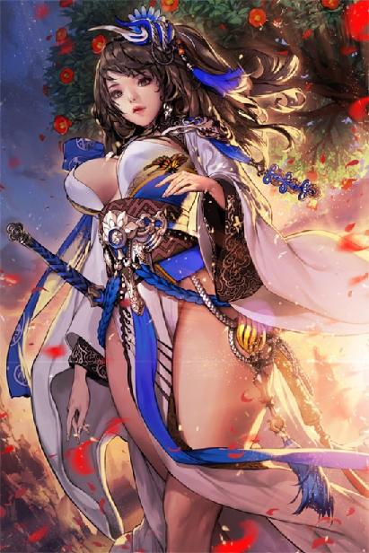

第82集·四海兴波
唐国篇（6）
出版日期：2019-12-17
【本集内容简介】
以大慈恩寺的窥基大师为首，九方势力云集长安城，誓要对程宗扬这位公敌除恶务尽，连他的侍姬也不放过！
程宗扬却从杨玉环口中得知，岳帅还有一个女儿，并且和秘御天王有关……
昭南忽然兴兵伐宋，廖群玉方寸大乱，贾文和却推过一个锦囊，吩咐他只需如此这般……
※ ※ ※ ※ ※

封面人物：杨玉环
一抹斜阳透过天井，映入回廊，也映在那具活色生香的娇躯上。杨玉环只穿着贴身内衣，傲人的身姿在阳光下一览无余，雪肤香肌，艳光照人。
但程宗扬这会儿顾不上欣赏眼前的美色。自己费心费力地设下圈套，好不容易大获全胜，将前来行刺的番僧和净念一并生擒，还没有来得及得意，你这会儿突然告诉我，小女忍不见了？
煮得熟熟的小鸭子，就这么“扑楞扑楞”飞走了？
程宗扬一拍脑袋，想起那个女刺客，不禁懊恼不已。那个该死的刺客惊鸿一现，就不见踪影，结果自己与两个秃驴一场大战，把她给抛到了脑后！
还没等他开口，杨玉环一双蛾眉立刻竖了起来，“女人？什么女人？”
程宗扬头大如斗。只因为吕雉还是处女，杨妞儿就操着心要把她大卸八块，这要是被杨妞儿知道自己对小女忍干的那点勾当，她还不得闹翻天？
“是女忍！什么女人？”程宗扬一脸严肃地说道：“刚才那名刺客，是个女忍者。跑掉了。”
“倭国的忍者？”杨玉环陷入沉思。
杨妞儿的脑回路自己完全摸不准，鬼知道她有什么好沉思的？望着地上的净念光头，程宗扬道：“把他带下去，仔细审审！”
“这有什么好审的？”杨玉环道：“痛打一顿，然后砍头，把脑袋扔到大慈恩寺里面，派个人去报官。”
程宗扬无语半晌，最后道：“干嘛要报官？”
“就说大慈恩寺的和尚又杀人了，让官府去查。放心吧，我以前都是这么干的。逮到刺客，把他们脑袋一砍，”杨玉环挥手比了一下，“丢到大慈恩寺，特好玩。”
“这有什么好玩的？”
“刺杀本公主的那么多，我哪儿查得过来？往大慈恩寺一丢，然后报官。官府要结案，大慈恩寺还不敢声张。那帮秃驴焦头烂额一通乱找……你还别说，十有八九能找出来历，比本公主亲自去找方便多了。”
程宗扬似乎明白她跟大慈恩寺的仇怨是哪里来的了。隔三差五往人家庙里丢具尸体，大慈恩寺能忍到现在已经很有涵养了。
“如果他们就是大慈恩寺的呢？”
“那正好啊，让他们见识见识刺杀本公主的下场——顶着脑袋过来，提着脑袋回去！”
杨妞儿好像认定这刺客是冲她来的，连缘由都懒得问——这种仇家满街走的架式，颇有岳鸟人的风采啊。
程宗扬觉得自己作为一个有素质的文明人，还是很有必要跟岳鸟人那种破罐子破摔的粗野风格划清界限的，起码得弄清楚这俩和尚干嘛要来找死？因为自己是佛门公敌，他们除害来了？
“还是先审问清楚。”
“好吧。”杨玉环这会儿倒是很好说话，“看在你替本公主出头的面子上，这事就包在本公主身上了。来人！”
高力士闪身出来，拿着一领狐裘，给主人披上。
“把这俩秃驴带走。”
“是。”高力士尖声应下，伸手提起净念和那名番僧。
程宗扬本来打算自己审，谁知还没张口，就被她越俎代庖了。
“你要把他们带去哪儿？”
“下狱啊。”杨玉环拍着胸口道：“放心，本公主在推事院有人！别看这贼秃一副苦行僧的样子，跟茅坑的石头一样又臭又硬，扔到推事院，管教他们老老实实，把肚子里的牛黄狗宝全都吐出来。”
“谁这么厉害？”
“推事院那俩管事的……”杨玉环仰起脸，思索道：“叫什么来着？”
程宗扬鄙夷地说道：“还有人呢，连人家名字都记不住？”
杨玉环白了他一眼，“两只蝼蚁，我记他们名字做什么？叫什么？”
高力士躬身道：“周兴、来俊臣。”
听到这两个名字，程宗扬虎躯一震，立马收起自己那点儿鄙夷，肃然起敬。早知道唐国有这两位大能，真该把小女忍丢过去，说不定早就招了。
“带走！带走！”
“哟，这就赶人呢？”
“……要不你今晚住这儿？”
“想得美！小鱼鱼，我们走！”
小鱼鱼？听到这个称呼，程宗扬一阵恶寒，浑身的汗毛都几乎竖了起来。女人闺蜜间的昵称都这么肉麻的吗？
“紫妹妹！”杨玉环跳进屋内，抱住小紫，兴高采烈地说道：“我今天表现好不好？快夸我！”
小紫笑道：“姐姐好棒哦！”
“紫丫头，就你的嘴巴甜。”杨玉环笑得眼睛都弯了。
趁两人告别，程宗扬吩咐道：“把那些霓龙丝衣装好，给公主带上。”
杨玉环耳朵尖得要命，当即转过头来，“就这几件怎么够？把你手里的霓龙丝衣都交出来，本公主全要了！”
“……你穿得过来吗？”
“你管我怎么穿呢？”
杨玉环把水香楼的霓龙丝衣一扫而空，又将程宅的存货全部定下，这才得意洋洋地满载而归。
送走镇国大长公主的鸾驾，程宗扬立刻赶回楼内，望着空无一人的房间，脸色阴沉得像要下雨一样。
横梁上垂下的绳索被利刃斩断，只留下一截空荡荡的绳头，本来悬在梁上的小女忍这会儿无影无踪。
那名刺客趁机溜走算不得什么，反正不是头一回了。可小女忍也没了踪影，问题就大了。
那名刺客究竟是什么身份？专门来救小女忍的？是黑魔海的人？还是纯粹路过把人救了？
那刺客上回在青龙寺附近消失，而且有人接应，痕迹也被扰乱——会不会与蕃密有关？十方丛林的人？
四天来了三趟，始终遮头掩面，隐藏身份，却频频亮出拂尘，刻意的成分实在太明显了，目的何在？
更要紧的是，除了她，还有没有刺客在盯着自己？
东瀛忍者、黑魔海……
大慈恩寺、十方丛林……
青龙寺、蕃密……
宦官、藩镇、道门……
程宗扬有点后悔，如果不是为放长线钓大鱼，故意放走她，也许早就擒下这个麻烦的刺客，弄清她的身份，不至于像现在一样全无头绪。
侍奴们已经翻查一遍，除了失踪的小女忍，其他物品都没有少，从小女忍身上搜出来的物品都留在原处，一样不缺。
程宗扬道：“要你们做的事，办了吗？”
几名侍奴互相看了一眼，“已经禁了她的目识和口识。奴婢们用蛾眉刺试过了，都快扎到眼珠，还一点反应都没有。”
也就是说，小女忍现在是瞎子和哑巴，目不能识，口不能言。
程宗扬忽然觉得有点不对，“不是让她招供的吗？怎么还哑巴了？”
罂粟女尴尬地说道：“奴婢们用了才知道，那药也禁了口识……”
蛇夫人道：“都怪姁奴那贱婢，配的药物效果一直不稳定。”
这贱人丢锅的技能越来越娴熟了。程宗扬长叹一声，“一群废物啊！”
虽然没有什么损失，但煮熟的鸭子就这么飞走了，也够让人郁闷的。整体而言，这次的陷阱还算成功，逮住俩光头，抓住机会跟潘姐儿重续了前缘，还上了一个小女忍。
收获算有，但风险也够大。净念已经摸上门了，水香楼与佛光寺近在咫尺，眼下是不能再待了，至少不能让赵氏姐妹身处险境。至于那名刺客……
程宗扬看了一圈，“你们紫妈妈呢？”
罂粟女道：“妈妈在给雉奴抽血。”
“抽血？抽什么血？”
罂粟女道：“太真公主说，那番僧是用车辛乘驭使瓦钦格阔……”
程宗扬听得一头雾水，“什么东西？”
罂粟女道：“奴婢也听不懂。反正太真公主说，那番僧的妖法虽然邪异，其实破绽极大，都怪主子一点儿天赋都没有，才跟他斗了这么久。像她这样有天赋的，随随便便就能干翻那番僧。”
程宗扬第一反应是杨妞儿太能吹了，自己堂堂一个六级修为的大高手，被她说得一点儿天赋没有，她反而天赋满满，强大无比？难道自己是根废柴，她才是主角？
“这么牛逼？什么天赋她有我没有？”
罂粟女道：“元阴之体。”
这东西自己真没有！
程宗扬黑着脸道：“她管这叫天赋？”
阮香琳笑道：“相公莫恼。太真公主说，那番僧的妖法惑人耳目，但也只是妖法而已，最容易被元阴之体克制。以处子之血制成符箓，施之可破。”
“这都什么鬼东西？”那番僧被打得毫无还手之力，合着是因为杨妞儿还是处女，克制了他的妖法？
罂粟女赶紧转移话题，“太真公主一直在夸主子呢。”
“夸我？”程宗扬一万个不信，“她那狗嘴还能吐出象牙来？怎么夸的？”
“太真公主说，主子虽然又抠门，又小气，心软得跟豆腐一样，还好计较，一点都不霸气……”
“这是夸我的？”
罂粟女笑道：“那两个和尚出手的时候，太真公主让我们待在屋里，谁都不许出去。后来看到主子出面挡住那两个和尚，公主可高兴了，眉开眼笑的。跟紫妈妈说，主子虽然小心眼儿，好跟她斗口，但临到事上还是挺爷儿们的，知道护住自家媳妇。”
程宗扬气都不打一处来。番僧来袭时，屋里一直没动静，自己还担心是不是另有敌人——合着她们好端端地在屋里看戏呢？
程宗扬冷笑道：“怎么着？看到我这么靠得住，杨公主动了春心，觉得我又有钱又有地位又能打，当场下定决心，非我不嫁？”
阮香琳笑道：“太真公主说，她要的男人有没有本事没关系，只要不作妖就是好的。”
这要求还真够低的。怕不是因为杨妞儿太能作妖，才生怕再找个惯会作妖的男人，两个人比着作妖吧？
“别瞎乐了。”程宗扬吩咐道：“准备些抚恤金，送到镇国公主府。”
死了一名护卫，总得表示一下。蛇奴下手虽然狠了点儿，连跟自己一伙的也杀，但程宗扬不至于仁善到要拿自家奴婢给一个陌生人抵命。人都死了，也没什么好说的，老实给自家奴婢擦屁股吧。
只不过……程宗扬皱起眉头，他当时并没有感受到死气。那口诡异的血池把人连皮带骨吞噬殆尽也就算了，难道连死气都没放过？
※ ※ ※ ※ ※
吕雉抱着雪雪，挺直腰背，跪坐在书案旁。不知道是不是因为刚抽过血的缘故，脸色有些苍白。
“你妈呢？”
吕雉情绪波动了一下，最后还是低着头道：“出去了。”
“小贱狗都没带？”
程宗扬揪了揪小贱狗的耳朵，惹得它一通乱咬，然后才看向书案。
“这在做什么呢？”
案上放着一只打开的铁箱，分成两半的箱体对等大小，表面笼罩着一层淡淡的光幕，内部充斥着各种不同类型的机械。
与以前见到时相比，箱内的结构要复杂数倍。狭小的空间内安装着无数齿轮，时而分开，时而组合，连接着数不清的连杆、滑块、钩爪……甚至还有细如发丝的链条，小如米粒的铣刀。
每个模块都嵌着一粒细小的龙睛玉，不时发出幽蓝的微光，犹如无数繁星，错落有致地散布在箱内每个角落。模块虽然繁杂，但并不是随便乱放的。仔细看去，会发现每个模块虽然都能独立运动，但经过巧妙的连接，形成一个完整有序的体系。
所有的动力都来自于箱底一根嵌着龙睛玉的转轴，经过大小不等的齿轮和传动轴，输送到各处模块上。一眼望去，无数细小的物体同时进行着各种不同的运动，旋转、研磨、切割、钻孔、分解、组合、粉碎、镕铸……如同一个繁忙而有序的工厂，令人眼花缭乱。
此时一块半透明的物体悬在箱内，被六只长仅寸许的机械爪牢牢固定住。三只嵌着金刚石的探针从不同角度伸出，在物体表面飞快地移动着。无数细小的粉尘从探针下飞溅而出，随即被一个精致的漏斗吸走，送到角落处一个拳头大小的丹炉中。丹炉周围看不到火光，却能看到丹炉表面时而发红，时而透出白炽的光泽，显示出极高的温度。
一只铣刀在物体表面迅速切削，接着又伸来一支带着锯齿的圆盘，将那块白色的物体一切两段，然后切出一个细微的凹状结构。铣刀移到被三只钩爪固定的另一段，切出一个凸状的突起。
钩爪旋转着，将切成两块物体重新组装起来，凸凹两端对齐，然后一支钻头伸来，在连接处钻出一个圆孔。另一只钩爪递来一根圆柱状的晶体，准确地置入孔中，就像是融化一样，看不出丝毫痕迹，精度高得让人难以置信。
程宗扬这才意识到，自己看到的是一对榫卯。那块半透明物体被切成一系列不同大小的部分，经过一连串他压根看不明白的疯狂操作，忽然间变成一个圆形的球体。那感觉就像是自己不小心点到了进度条，跳过了中间的过程，一眨眼的工夫，就突然蹦出来一个圆球。
一根锥状的圆管伸出，喷出一股细细的水流，在圆球表面转动一圈，洗去粉尘。等圆管消失，那颗圆球已经变得晶莹剔透，一眼就能看到圆球下方的机械模块。
程宗扬定了定神，终于意识到这是一块水晶。
自己在洛都购置了一大批不同类型的水晶，大部分都留在舞都，没想到还有一些被小紫随船带到长安。
水晶球在六朝并不罕见，徐大忽悠手里就有一个比这个大上十几倍的，但这只水晶球明显不对——自己亲眼看着它是被切割成无数细小的部分，又重新组合起来，可制成的水晶球看不出任何组装的痕迹，就像是用整块水晶磨制出来的一样，浑然一体。
更奇怪的是，作为一个透明的球体，它居然没有任何光线折射。从任何一个角度看去，透视的物体都没有变形，就像一片平板玻璃，甚至不存在一样——连折射率都被改变了！
程宗扬真心没闹明白这是怎么做到的，他怀疑自己一个不留神，这玩意儿就会消失在空气中。
正当程宗扬纳闷的时候，悬浮在箱中的水晶球忽然扭动起来。榫卯连接的各部分居然是可以自由活动的，先是变成一个柱形，然后扩张成环状，接着从中间分开，变成一条水晶蛇，在箱中环绕盘旋。
吕雉终于忍不住道：“这是什么法术？”
“屁！”程宗扬严肃地说道：“这是科学！”
一支机械爪握住一只细颈瓷瓶，快速而准确地倾斜到一个特定的角度。一滴鲜血从瓶口淌出，下方的水晶蛇在空中一闪，吞下血珠。
透明的蛇身泛起淡红的光泽，然后咬住尾巴，悬浮在空中，一动不动。
“这也是科学？”
程宗扬板着脸道：“是！”
吕雉正要开口，程宗扬抢先道：“处女血哈？”
吕雉脸一红，避开他的视线。
“幸亏你是处女，要不然就该用紫丫头和太真公主的血了。”
吕雉侧着脸，微微咬住嘴唇。
“从哪儿抽的血？不会把你的膜给破了吧？”
吕雉情绪又波动了一下，最后低下头，伸手拉起衣袖，露出腕上一个细小的针孔。
针孔仿佛一颗小巧的红痣，嵌在雪滑的肌肤上，平添了几分俏态。程宗扬禁不住拿起她的手腕，装成观察的样子摸了几把，然后贴在她耳边，小声警告道：“不许说！那天的事你敢说一个字，我立马先杀了你，然后自杀！”
吕雉怔了一下，“为什么要自杀？”
“废话！老爷我不要面子啊？你去问问，那些奴婢的嘴巴我都没怎么亲过，何况是亲你……那个？记住啊，这事天知地知你知我知——还有死丫头知道，别人谁都不许说！记住没有？”
吕雉垂下眼睛，“记住了。”
程宗扬后悔不迭，“妈的，我怎么就鬼迷心窍了？现在死丫头知道了，肚子里不定怎么笑话我呢。”
“嗤”的一声轻笑，却是吕雉禁不住笑出声来，随即收起笑容，神情漠然。
程宗扬一阵火大，“你还笑？你有什么好笑的？”
“没有。”
“嘴巴给我张开！”
吕雉胸口起伏了一下，然后张开嘴巴，一边闭上眼睛。
“不许闭眼！”程宗扬解开衣物，气恼地说道：“给我含着！”
那根充满男性气息的阳具伸到面前，吕雉顺从地张开红唇，将主人火热而粗硬的龟头含到口中。
程宗扬狠狠捅了几下，顶得雉奴喉头作呕，才消了气。
“喂，”他忽然道：“你是不是有什么秘密瞒着我呢？”
吕雉舌尖停了一下，然后摇了摇头。
程宗扬心下冷笑，有死丫头看着，真不信你能翻起什么浪花来。
水晶蛇表面的血色渐渐融化、消失，重新变得透明。恢复原状的水晶蛇从尾部盘起，眨眼间，一颗完美的水晶球便即成形。水晶球从空中落下，沿着一条凹槽滚到箱角，发出“叮”的一声轻响。
凹槽内已经有了十七颗水晶球，最小的状如荔枝，最大的有鸡蛋大小。十八颗水晶球依次滚动起来，凹槽下方，一条乳白色的细绳向上昂起，绳端飘浮着一颗龙睛玉。
那只小巧的丹炉悄然打开，炼制过的水晶粉尘从炉口飞出，仿佛无数星芒飘浮舞动，星星点点落在细绳上。乳白色的绳索像是被水晶的色泽浸染，每染上一点就透明一分。当最后一点水晶粉尘落下，细绳变得彻底透明，只剩下一个虚幻的轮廓。
水晶球逐一落下，细绳毫无阻碍地从球体中间穿过。每穿过一颗，绳端的龙睛玉就盘旋起来，灵巧地打一个结，然后重新昂起。
十八颗水晶球全部穿过，细绳首尾相连，自行打了一个菩提结，然后静静落在箱角。
雪雪跳过来，张口往水晶珠串咬去。
程宗扬一把捏住它的狗嘴，提溜着小贱狗扔到一边，然后拿起那串水晶球。
十八颗水晶串在一起，入手一片温凉。程宗扬提在手中，感觉比正常的水晶重了一倍，中间那根细绳似乎是某种动物的筋带，极富弹性。
“这是……念珠？”
吕雉跪在他面前，心无旁骛地吞吐着肉棒，动作越来越温柔，越来越细致。
隆冬时节，日暮极为短暂，几乎是转眼之间，天色便已黑透。
程宗扬爬上楼顶，只见小紫正坐在檐侧，双手抱膝，精致的玉颊枕在膝上，像是睡着了一样。
夜凉如冰，寒意侵人，程宗扬脱下外袍，披在小紫肩上，一边把那串水晶念珠递过来，“水晶珠串做好了。幸好我出手快，要不然就被小贱狗吃了。”
小紫嘟起嘴唇，“嘘……”
程宗扬飞快地在她唇上亲了一口，然后拥着她的肩膀坐下。
“别闹。”
小紫侧着耳朵倾听远处的动静，过了会儿道：“来了。”
说着她直起腰，摊开手掌。一只飞虫落在她掌心，小紫轻轻握住，片刻后，星眸透出异样的光彩。
“程头儿，要不要夜游长安城？”
※ ※ ※ ※ ※
夜色下的长安城，仍然沉浸在新年的气氛中。人烟最为稠密的宣阳、平康、崇仁、胜业诸坊，虽然坊门紧闭，坊内却是灯火连天，人声鼎沸。
满城灯火中，唯有东边靠近春明门一片区域黑沉沉的，仿佛一处被人遗忘的角落。
一名背着包袱的大汉翻过满是枯蒿的土墙，刚一落地，便踩到一堆碎石，险些崴到脚踝。
“妈的！”那大汉咒骂一声。
墙头伸出一个红鼻头的脑袋，“熊哥，怎么了？”
“没事。下来吧。”
两人从墙头跃下，与大汉凑到一起。
红鼻头的汉子抱怨道：“那帮狗崽子追得太紧了，大过年也不安生。”
“东市的落脚点也被六扇门的狗崽子盯上了。熊哥，怎么办？”
大汉仔细看着左右，低声道：“先忍忍。”
“都怪老十，”红鼻头的汉子抱怨道：“非要把人吊在坊门上。找个沟渠一扔，正好赶上年前的大雪，埋得实实的。等开春雪化，咱们早就回平卢了。”
瘦长脸的老十反驳道：“谁让他背着我们想去报官？这种窝里反的货色，按平卢的规矩，就该悬首示众！”
“那你还剥了他的面皮？”
“不剥面皮不就被人认出来了？”
那位熊哥呵斥道：“别吵了！”
两人悻悻然闭上嘴。
过了一会儿，红鼻头道：“要不然，明天咱们去找魏博的人，寻个落脚的地方？”
“魏博的人靠得住吗？”
“靠不住也得给我们个遮风挡雨的地儿！”
熊哥道：“明天的事明天再说。今晚先对付一宿。”
三人抖开包袱，却是一只羊毛织成的囊橐，平时用来盛放东西，此时裹在身上，也能用来御寒。
熊哥刚闭上眼，忽然心头一凛，一股寒意爬上心头。他连忙睁开眼，只见面前不知何时多了一名男子。
那男子穿着一袭锦服，外面披着一条玄黑色的大氅，头发用条丝带随随便便束着，看上去二十多岁年纪，相貌平常，眉宇间有种身居高位，久居人上的尊贵之气，但目光内敛，神情温和，并没有颐指气使的傲态，倒显得平易近人。
让人摸不着头脑的是，他肩上竟然坐着一名少女。那少女大半身子都被大氅罩着，脸上戴着面纱，只露出一双明眸，夜色间，仿佛有莹润的珠光流动。
那男子笑了笑，“做什么的？”
熊哥咽了口唾沫，“避……避风。”
“大过年的不回家，怎么跑这儿来避风呢？”
“家里失火。烧了。”
那男子皱了皱眉头，“哪个坊的？”
“靖恭坊。刚烧的。”
那男子露出一抹古怪的眼神，忽然咳嗽了几声，“那个……这是我家，别在这儿待了。”
说着他丢出几枚钱铢，“这点钱拿去，找个住的地方。”
几枚钱铢掉在地上，金灿灿的，却是几枚金铢。
熊哥露出一副惊喜的表情，一边俯身捡起钱铢，一边连声道谢，“多谢公子爷！多谢公子爷！多谢！多谢！”
旁边的老十眼睛一亮，一截刀柄从袖口滑出，落在掌心。
熊哥一把攥住他的手腕，赔笑道：“打扰公子了，小的这就走！这就走！”
说着扯起两名同伴，翻墙爬了出去。
到了墙外，那位熊哥背上已经满是冷汗。
老十压低声音道：“熊哥，肥羊——”
“闭嘴！快走！”
老十还不甘心，“出手就是一把金铢！熊哥，不如做了他们！”
“你知道刚才是哪儿吗？”
“兴庆宫啊。废弃几十年了。”老十舔了舔唇角，狞声道：“杀了往碎石堆里一埋！肯定没人知道。”
熊哥森然道：“你都知道废弃几十年了，他们打哪儿来的？”
红鼻头的汉子突然间打了个寒噤，“你们听见脚步声了吗？”
熊哥眉心跳了跳，没有作声。
“一点动静都没有……”老十倒吸了口凉气，喃喃道：“真邪了门儿了，不会是撞见鬼了吧？”
红鼻头的汉子脸也白了，“那女的抱了条白狗，那狗看我一眼，我后脊梁都凉嗖嗖的……”
老十慌了起来，“哪儿有狗？我怎么没看到？”
“我瞧得真真的，就是条狗！”
“那女的不是被大氅罩着吗？”老十嗓子像被捏住一样变了腔调，颤声道：“她……她……她没腿！”
红鼻头汉子都快哭了，“她腿是被那男的抱着的吧？塞到腋下暖着……不会真没有吧？”
“少自己吓自己！”熊哥说着，拿出刚才捡的金铢，用力一拧，金铢弯折过来，脸色好了一些，“钱是真的。”
“熊哥！这钱留不得！”老十道：“说不定明天一早会变成树叶子。”
熊哥手抖了一下。一共五枚金铢，价值万钱，算是一笔不小的财富了，难道平白扔了？
“咱们今晚就花了它！”
“熊哥，咱们去哪儿？”
“宣平坊！”熊哥狞声道：“灯下黑！咱们去宣平坊住店，吃的喝的用的，把这些金铢都给花了！”
※ ※ ※ ※ ※
小紫坐在程宗扬肩上，笑吟吟道：“大笨瓜。”
“我故意的。”程宗扬道：“他们要是心够黑，刚才就该杀人劫财了。既然没动手，不管他们怎么想吧，总算他们有点运道，赏他们点儿无所谓——万一真把他们家给烧了呢？”
“那就当他们倒霉啰。”
“积德行善啊死丫头，早点儿给我生个大胖小子。”
小紫笑道：“生不出来可不怪我。”
“哎，死丫头，你说会不会是因为你没生，吓得她们都生不出来，生怕别了紫妈妈你的苗头？”
“程头儿，你越来越会丢锅了。”
“要不然就是我被小贱狗咬过的后遗症。我们把它煲汤吧，说不定就治好了呢？”
雪雪从女主人怀里伸出脑袋，龇牙咧嘴，狺狺作势。
“还挺狂啊，你把它放开！”
“雪雪最乖了，不许吓我们。”
雪雪得意地摇着小尾巴，两条小短腿抱着女主人的手臂，偏着脑袋，讨好地在上面蹭着。
两人沿着破旧的宫墙，来到花萼相辉楼的位置。
那片废墟旁边放着一堆毛竹，还有几束用来捆扎的竹篾。废墟中间已经清理出来一片，搭了个简易的架子，差不多有两丈多高。
程宗扬仰头看着竹架上空，“你们上次是怎么被传送到大雁塔的？”
“不知道啊，飞着飞着就飞到塔里边了。”
“会不会是飞的时候正好碰到哪个特殊位置，然后被传送过去了？”程宗扬仰着脖子想了一会儿，“死丫头，你不是能看到紫外线红外线什么的吗？上边有什么，能看到吗？”
小紫闭上眼睛，过了一会儿重新睁开，眼底泛起一丝淡紫的莹光。
“有一点光。很淡。”
“雉奴！”程宗扬唤道。
吕雉无声地落了下来。
“带我们飞上去。”
吕雉不动声色地说道：“背不动。”
“就我们两个你都背不动？再啰嗦，我就让你把衣服脱了，光着屁股飞，好减少负重。”
程宗扬说着取下大氅，丢在一边，然后放开小紫一直捂在自己怀里的双脚，把她放在吕雉背上，顺手扯住雪雪的耳朵，把它丢在大氅边，“看住了！弄丢了就把你下火锅！”
程宗扬说着，一把抱住吕雉的脖颈，试图爬到她背上——然后吕雉就被压得双膝一软，跪倒在地。
程宗扬气都不打一处来，“你怎么这么废物啊！”
吕雉咬了咬牙，“待奴婢先飞起来再试。”
程宗扬只好放开吕雉，看着她展开修长如墨的双翼，轻轻一振，将小紫负在背上，凌空飞起。
程宗扬攀上两丈多高的竹架，等吕雉飞过来，伸脚在她腰上踩了踩。吕雉身体随即一沉，那纤腰软得就跟面条一样。
小紫笑道：“程头儿，你太重了，那里经不住，要往后一点。”
程宗扬沉着脸踩了踩雉奴的屁股，感觉比腰部的承受力强一些，这才跨坐上去，扯住她的衣带。
黑暗中，看不清吕雉的脸色，只看到她双翼吃力地摆动着，像是灌满了铅一样，勉强往空中飞去。
“就是这里了。”小紫往面前的虚空一指。
程宗扬竭力睁大眼睛，眼前黑沉沉的，连个屁都没看到。
小紫拿出一个黑色的小罐子，往空处丢去。只见那只罐子飞出数尺，然后像是被黑暗吞噬了一样，凭空消失。
程宗扬怔了一会儿，“你把手雷丢过去了？”
“大笨瓜，手雷都被你用光了。”
“那你丢个罐子干嘛？万一被大慈恩寺的秃驴发现了呢？”
“没关系啊，那罐子是冰做的，丢过去就化掉了。”
程宗扬不信，“这么黑的冰？拿墨汁做的？”
“是毒药啦。罐子化开，里面的毒烟会飘散出来，”小紫笑道：“足够十层用的。”
“我刚给你积的德……”程宗扬无力地说道：“毒药你都乱丢，那帮秃驴中毒是活该，可万一有别人到塔上呢？”
“放心好了，这是六拂化清散，对常人无效。”
“那要不是常人呢？”
“会缓慢侵蚀气海，丹田会漏气的。”
“这种东西别乱扔……”程宗扬看了眼身下的吕雉，没再说下去。净空是自己人的事，最好别让她知道。
“不对啊？”程宗扬忽然皱起眉头，“这不是秘境入口吗？怎么会传送到大雁塔呢？”
“也许对应很多入口呢？”
“能感应到卓美人儿吗？”
小紫偏着头感应了一会儿，“很远。”
“这卓美人儿，还挺命大。”
秘境进不去，程宗扬也没辙，只能故作轻松地说道：“行了，没死就算不错了。走吧，等搭好台子再慢慢琢磨。”
吕雉费力地喘了口气，挥动羽翼，斜掠着落在地上。
程宗扬翻身下来，顺手在她圆臀上捏了一把，“就飞了这么一会儿，怎么湿成这样？”
吕雉吸了口气，“奴婢用力过度，累的。”
“真是累的？”程宗扬讶道：“我还以为是你下面湿了呢。”
吕雉猛地背过身，举袖遮住面孔。
“还害羞……行了，蛇奴，把她带回去。她要敢逃跑，就把她腿砍了。”
蛇夫人现身出来，拉着吕雉的手笑道：“太后娘娘，跟我走吧。”
程宗扬揽住小紫的腰肢，一边走，一边得意洋洋地说道：“这日子多好，没事儿遛遛鸟，调戏调戏家里的丫头——有太后娘娘在，两件事合一块儿就办了。哎，你抽她的血，真有用吗？”
“试试啰。”小紫道：“要不然就只能抽杨姐姐的了。”
“别！她那么胖，血里八成都是油。”
“程头儿，你又在背后说人家。”
“废话，这种话能当面说吗？”
※ ※ ※ ※ ※
从兴庆宫西南角出来，斜着穿过东市，便是紧邻着宣平坊西北角的亲仁坊。坊内最有名的所在，莫过于咸宜观。此时观前用上千盏银灯砌成两株灯树，每一株都有两丈高，几乎与门檐平齐，光焰通明。
咸宜观规模宏大，在观中修行的女冠非富即贵，里面虽然有崇慕道法，一心清修的道门信徒，更多的则是不愿受婚姻束缚，追求个性自由的大唐女性——程宗扬来长安没多久，关于咸宜观的风流韵事便听了不少。也正是因此，咸宜观并不像其他寺庙道观一样门户严谨，而是观门大开，来去自如。
此时已是深夜，两座灯树之间的大门依然开着。一眼望去，能看到几名穿着道服的女冠手持拂尘、如意、法铃等物，正在殿前打醮祈福。观中除了一些信徒焚香祝拜，还有几名看起来就风流倜傥的文士，正与相好的女冠携手同游。他们固然毫不避忌旁人的目光，旁人也对此见怪不怪。
作为穿越者，程宗扬倒是很赞赏此地的开放和大度。他与小紫手拉着手，一边看着观中的景致，一边感叹道：“唐国的风气就是好，开放、包容、自信……不会吧？那俩是在亲嘴儿？啧啧，这男女的风气也太开放了。”
小紫笑道：“程头儿，你看错了。那个穿文士服的有耳洞哦。”
程宗扬仔细看去，树下搂抱的两人果然都扎有耳洞，这会儿唇舌相接，正如胶似漆。
也许是他目光太过炯炯有神，那文士转过头，喝道：“看什么看！”声音清丽，果真是个女子。
程宗扬赶紧拱手，“打扰打扰！我们就是路过，你们继续，继续。”
“扰人清净！”穿着男装的女子忿然拉起同伴，拂袖而去。
程宗扬与小紫对视一眼，都不禁好笑。
两人拉着手走到侧院，只见院中一排朱门绮户，檐下悬着灯笼，写着各自的道号。宾客们诗文唱和，喧哗笑闹声不时从房中传出，热闹的气氛不像道观，倒更像是迎来送往的客栈。
程宗扬有些纳闷，小紫平常懒洋洋的，除了睡觉，什么都提不起兴趣，怎么突然大半夜拉着自己闲逛？
程宗扬笑道：“死丫头，你不是带我来开房的吧？”
“是啊。就是这间好了。”
小紫说着，抬手推开一扇朱门，举步入内。
两名客人正在席前端坐，闻声齐齐转过头来。看到一个绝美的少女进来，不由露出色授魂与的表情，但紧接着脸色大变。
两人身体微动，刚想跃起身，只见那少女怀中的小白狗昂起头，口边迸出几点火星。
两人不敢再动，僵着身子看着那少女走近，嘴角抽动着，露出一个苍白惨淡的笑容，“紫……紫姑娘……”
小紫笑吟吟道：“你们认识我？”
“是……”
“那为什么不站好？”
两人赶紧站起身，垂手而立。
“这里管事的是谁？”
“回紫姑娘，是宫先生。”
“让他来见我。”
两人对视一眼，硬着头皮道：“宫先生不在长安，只怕……”
“离天亮还有四个时辰。两个时辰他赶不回来，你们就去死好了。”
两人额头冒出豆大的汗滴，勉强笑道：“两个时辰怕是来不及，还请姑娘多宽限一些。”
“不行哦。我只有两个时辰起效的毒药，超过两个时辰就会死掉的。”
房内传来一声轻叹，“姑娘何必为难他们？”说着一个神情冷峭的丽人掀帘而出。
齐羽仙！
程宗扬眉角突突跳了两下。真没想到，黑魔海在长安城的藏身处，居然会设在道门要地，宾客云集的咸宜观！她们就不怕露出马脚？
不过话又说回来，恐怕真没几个人能想到黑魔海会这么大胆子，竟然敢藏在道门的腹心处。
齐羽仙道：“恭喜程侯，以一己之力平定洛都之乱。”
程宗扬不客气地说道：“你们干嘛总跟着我？阴魂不散啊？”
“今日是程侯你主动找上门来的吧？”
“少废话！你们的人刺杀我，把人交出来，我就放你们一马！”
齐羽仙挑起眉梢，“程侯明鉴，飞鸟萤子并非我巫宗门下，所作所为，与我巫宗没有任何关系。”
程宗扬冷笑道：“我都没提名字，你就知道是谁，还装傻呢？”
“飞鸟萤子失踪多日，音讯皆无，正赶上程侯前来兴师问罪，我若是还猜不到，才是装傻。”
“她是你们聘请的客卿，你跟我说没关系？”
“我们聘请的客卿是飞鸟熊藏。那位飞鸟萤子虽然也姓飞鸟，却并非我巫宗聘请。”
“还跟我装呢？你们的聘书我都见过，聘请飞鸟兄弟为供奉。”
“是兄弟，可不是兄妹。”齐羽仙道：“飞鸟兄弟中的哥哥飞鸟熊藏死在程侯手中，弟弟飞鸟翔闭关修炼忍术，与圣教失联多日。飞鸟萤子是自己找上门来的——我们可没出过一文钱的聘金。”
“你们也太黑了吧？把人往死里用，出了事就撇得干干净净？还有脸说一文钱没花，怎么着？你们还准备把她说成是志愿者？”
“事实如此。我们可没有指使她去刺杀程侯。”
程宗扬嗤之以鼻，“事实要是有用，还用得着打来打去吗？大家摆事实，讲道理，谁有理谁赢——可能吗？”
齐羽仙摊开手，“人不在我这里，程侯再不满也没办法。”
“别装了！她已经招供了，幕后指使者就是你！”
齐羽仙无奈地说道：“程侯非要栽赃，小女子也无可奈何。”
“栽赃？要不要我们在魔尊面前立誓？”
程宗扬不提还好，提起被改成岳鸟人面孔的魔尊像，齐羽仙就不禁露出一脸吃屎的表情。
齐羽仙忍了又忍，最后目光一扫左右，“你们出去！”
“是！”两人刚要举步，只见程宗扬身形一闪，双掌直切两人腰腹。
六级通幽境的修为不是白给的，一看他的出手，两人就知道要糟，连忙撤步弓身，避开要害。谁知程宗扬用的却是个虚招，趁着两人弯腰避让，上半身露出破绽，双掌快捷无伦地一翻，扳住两人的脖颈，然后劲气一吐。
“呯”的一声，两人脑袋撞在一起，齐齐晕倒。
程宗扬轻松地拍了拍手，“才这么点儿修为？也太水了吧？”
齐羽仙胸口起伏了一下，忍着气道：“程侯如今被十方丛林列为佛门公敌，正自顾不暇，难道还要再树敌吗？”
“多新鲜啊，”程宗扬冷笑道：“说的好像大家不是敌人一样。”
齐羽仙道：“就算大家是敌非友，但眼下的局面，合则两利，斗则两伤。至少现在，本教并无意与程侯为敌。”
程宗扬看了小紫一眼，心里暗自嘀咕，死丫头特意来找黑魔海的人，究竟打的什么主意？
“有没有敌意，口说无凭，起码得拿出诚意来吧？”
“程侯想要什么诚意？”
“你们出手，把窥基杀了——办干净点，别牵扯到我身上。”
齐羽仙气得笑了起来，“我如果答应，程侯会相信吗？”
废话，相信你们，我还不如相信老母猪会上树。
程宗扬冷着脸道：“这就是没诚意了？”
“刺杀窥基，请恕小女子无能为力。不过程侯有意对付窥基大师的话，倒是有些消息可以提供给程侯。”
“说来听听。”
“程侯可知道，十方丛林的沮渠二世大师身染沉疴，如今有意择一门人，授予衣钵？”
沮渠大师准备传位了？
“传给谁？”
“沮渠大师心许何人，外界尚不知晓。不过窥基大师、释特昧普大师都在备选之列。”
程宗扬心头一动，这个消息如果是真的，份量就很重了——说明窥基与释特昧普之间有绝大的利益冲突！
程宗扬嗤笑一声，“路人尽知的消息也拿来蒙我？”
齐羽仙看了小紫一眼，“程侯想知道什么？”
“你们家那个贱人呢？又在哪个阴沟里钻着，准备害谁呢？”
“仙姬正在协助教尊筹备大祭。不日便会请紫姑娘与殇侯北上。”
程宗扬看着她，慢慢露出一丝森冷的笑意，“也就是说，唐国主持大局的，只有你一个……”
齐羽仙笑容变得僵硬，对面的男子杀意喷薄而出，显然是真动了杀心。
她并没有撒谎，剑玉姬确实不在长安城内。教内大祭已经拖延多时，当初因为魔尊丢失，只能百般敷衍，如今迎回魔尊，时隔二十余年的大祭，已经成为教内压倒一切的头等大事。为此圣教全面收缩，行事低调之极。
却没想到，即使躲进咸宜观也没能瞒住小紫，被她直接找上门来。别人也许不知道，但齐羽仙清楚，为了隐匿行迹，自己在坊内、观内、院内暗中布置了三重防卫，结果他们却如入无人之境，直到踏上门来，三重防卫都没有一丝示警，等她发觉不妙，已经无法脱身。
齐羽仙与程宗扬打过不少交道，这个身世成谜的年轻人虽然有着让人好笑的道德观，性子温和，极少采取激烈手段，相比于他的年纪，攻击性低得出奇，尤其是主动攻击方面低到可以忽略不计，但绝对是个危险人物——老好人一旦动了杀心，必定是血雨腥风。
齐羽仙立即设法自救，“好吧！唐国有人要对付你。”
程宗扬衣袍无风而动，逼人的杀气牢牢锁定对面的丽人。
齐羽仙飞快地说道：“以窥基大师为首，参与者有掌管神策左军的仇士良；龙宸在长安的杀手；淮西、魏博、平卢三镇的牙兵；十方丛林的大慈恩寺、青龙寺、佛光寺；十六王宅的两位亲王：安王和陈王；还有瑶池宗的奉玦仙子和周族的少主。”
“你怎么知道得这么清楚？”
“他们通过龙宸，邀请我们一同出手。我借口请示仙姬，如今尚未回复。”
程宗扬盯着她，“瑶池宗？”
“瑶池宗君长老身死，奉琼仙子朱殷失踪，有消息称是你做的手脚。”
“谁说的？”
齐羽仙硬着头皮道：“仙姬。”
也就是剑玉姬不在场，不然程宗扬非捅她一刀不可。这贱人太他妈缺德了！变着法儿地给自己泼污水，各种造谣诬蔑……好吧，就算这事确实与自己有关，她用得着喊得满世界都知道吗？
“对付我一个远道而来的外来者，用得着这么多人？”加上黑魔海已经九方势力了，难道还要再找一个，给自己来个十面埋伏？
“程侯是汉国使节，又是辅政大臣，事关汉唐两国，必须要做得干净，避免走漏风声。所以要纠集足够的人手，一击必杀，不容一人脱身。程侯身边高手不少，单是那些侍姬，就不容他们不小心。”
“连奴婢也不放过？这是要斩草除根？”
齐羽仙暗暗吸了口气，“程侯莫怒——释特昧普已经放出话来，不仅要除掉程侯这位佛门公敌，还要将程侯的侍姬尽数度化，充作善母。”
“咔”的一声，程宗扬脚下的青砖寸寸碎裂。
良久，程宗扬森然道：“你是故意挑拨？想激怒我？”
齐羽仙道：“当时在场的有魏博乐从训，还有大慈恩寺的几名僧人，是真是假，程侯一问便知。”
“我先杀了你，岂不是先少了一个敌人？”
齐羽仙举起右手，“我可以起誓，绝不会向程侯出手！相反，我会声称得到仙姬许可，加入他们，借机将他们筹划的内幕透露给程侯。”
“我会信吗？”
“紫姑娘是毒宗唯一传人，今次大祭必须在场。如果因为我坏了教内大事，我只能以死向教尊谢罪。”
“你们和十方丛林什么关系？”
齐羽仙道：“十方丛林和我们一样，都曾与岳鹏举结怨。但敌人的敌人，未必就是朋友。程侯能理解吗？”
“理解个屁！”程宗扬收起杀意，“把他们计划的时间和地点告诉我。要是敢玩花样，以后我见你们一次杀一次！”
程宗扬转身欲走，却听小紫道：“那几个会飞的鸟是怎么找到你们的？”
程宗扬一拍额头，自己本来想知道小女忍是不是被黑魔海派人救走的，结果说了一大通，却把正事给忘了。
齐羽仙打起十二分的精神，小心回道：“飞鸟兄弟是幽长老招揽，据说在倭国犯了事，来六朝避仇。”
“犯了什么事？”
“姑娘知道，他们忍者平常鬼鬼祟祟的，不喜欢跟人交谈，所以我也没有打听过。”
“飞鸟翔闭关修炼什么忍术？”
“我不太清楚。”
程宗扬不满地说道：“这个不知道，那个不清楚，要你有什么用！”
齐羽仙寒声道：“请程侯自重。对我一个弱女子呼来喝去，难道就显了侯爷你的威风？”
“一日为婢，终身为奴。你一个奴婢还指望主子跟你客气？诶，我突然发现你挺不怕死啊？你要不服气，我干脆还是杀了你算了。”
齐羽仙深深吸了口气，“程侯息怒，是我的不是。至于飞鸟翔修炼的忍术，他们忍者行事隐秘，极少示人。”
小紫道：“那就是演示过了？”
齐羽仙沉默片刻，“我只见过他使用匿身术，能在地下潜藏数个时辰。”
“飞鸟萤子什么时候来的？”
“半年之前。接到飞鸟熊藏的死讯，她乘舟渡海，前来收取骸骨。”
“骸骨呢？”
齐羽仙犹豫了一下，“应该在飞鸟翔身上。不过他一直闭关，我们也没办法确认。目前只能说下落不明。”
“所以就是你们故意吊着她，让她为你们办事？”
齐羽仙没有作声，默认了此事。
小紫笑道：“你们敢这样骗她，除非那个飞鸟翔已经死了。”
齐羽仙浑身一震，眼中流露出震惊、懊恼、后悔，还有一丝深深的畏惧。
她已经打起十二分精神，结果还是露出马脚，被小紫轻易就猜出幕后真相。
“最后一件事，”小紫摊开手掌，“把我的龙精还给我。”
齐羽仙脸色有点难看，这都什么年头的事了，这会儿居然又翻出来。
人在屋檐下，不能不低头。齐羽仙忍气吞声地说道：“龙精不在我手里。”
“去哪儿了？”
“已经奉给教尊。”
“你起誓。”
齐羽仙张了张嘴，最后苦笑道：“请紫姑娘恕罪。龙精确实不在本教。”
“那你拿什么来赎命呢？”
齐羽仙默然良久，最后一咬牙，从怀中取出一只玉盒。
小紫眼睛一亮，接过玉盒，笑道：“你好笨啊。人家是说，你把元红献给程头儿，用来赎命就够了。”
齐羽仙脸上掠过一丝懊恼，“我可以反悔吗？”
“晚啦。”小紫笑眯眯道：“下次请早。”
齐羽仙目送两人扬长而去，片刻后院外传来讯息，发现舞阳程侯的行迹。接着观中传讯，舞阳程侯与紫姑娘去三清像前转了一圈，然后离开咸宜观，一路向南，目前正在跟踪。
齐羽仙松了口气，背后的罗衣瞬间被冷汗湿透。
室内传出一个声音：“他们走了？”
“是。”
纱帘飘开，一名身着紫袍的宦官从室内出来，“他的太一经得了殇振羽的指点，年纪轻轻便有了通幽境的修为，了不得。”
齐羽仙恨恨道：“若非仙姬说过，他身上有绝大的秘密和机缘，早在盘江，我就动手除掉他了。”
当日在南荒，以他那点修为，自己随手都能捺死他！谁知一念之差，便眼看着他的修为和他聚拢的势力一样，以令人恐怖的速度疯狂提升。短短两年，便凌驾于自己之上，如今自己反而要在他的威胁下忍辱偷生。
“小剑心思太重，什么秘密能比性命更要紧的？”
那宦官走到椅旁坐下，从袖中掏出几枚骰子慢慢摇着，“我那个便宜侄女已经知道了吗？”
“虽然瞒得紧，但只怕已经被她觉察出些许蛛丝马迹。”
“可惜了。”那宦官叹道：“鱼家那小子是个好料子，可白白送命不说，连阴阳鱼也被程家那小子拿走。殇振羽啊殇振羽，你他娘的一辈子都是个混蛋！”
“若非中了殇侯的腐毒，尊者也不会改名换姓，入宫潜修，恰巧避开岳贼当日的杀戮。也算因祸得福。”
“这算什么福气？”鱼朝恩怨气冲天，“我倒宁愿缺点别的！”
鱼朝恩手中的骰子越摇越快，最后覆手一掷。三枚骰子齐齐射入桌案，每一面都是六点朝上。
小小挑拨一句，齐羽仙乖巧地闭上嘴，免得引火烧身。
鱼朝恩挥袖一拂，三枚骰子依次跳出，落入袖中，起身道：“赶紧把事都办完，大祭要紧！可不能再耽误了。”
齐羽仙敛衣施礼，“是。”
“还有，大师兄的伤势这么多年都不见好，如今已经迎回魔尊，他要还是无法出面理事，不如趁早让贤！”
鱼朝恩人影已经消失，声音却留了下来：“十来年都没弄出名堂，练赤城他不觉得丢人，我还觉得丢人呢！哪怕交给我试试呢？”
※ ※ ※ ※ ※
小紫晃了晃玉盒，“程头儿，是不是很后悔啊？”
程宗扬果断装傻，“这盒子多漂亮，里面装的是啥？”
“羽奴的元红啊。”
“说点别的吧！”
“逗逗你嘛。呶。”
小紫打开玉盒，里面是一片血红的花瓣，在夜色中若有若无地浮动着，变幻不定。
程宗扬怔了片刻，猜测道：“澄心棠？”
小紫笑道：“像不像羽奴的元红？”
“你非要提这个是吧？”程宗扬在她鼻尖上刮了一记，“它不是被你拿走了吗？”
“人家拿的只是花蕊，临走时还留给了情奴。要不然你能这么容易把两宫太后都带走？”
澄心棠能助人幻形，对狐族幻化匿形有奇效。程宗扬从闻清语与淖方成交谈时的只言片语听到，澄心棠因为某种变故，一分为六，花蕊在吕氏一族手中。没想到齐羽仙也有一片，还被小紫勒索到手。
“这东西怎么用？”
小紫拍了拍雪雪的脑袋，让它张开口，然后把花瓣放在它口中，“不许吞下去。”
雪雪点了点头，闭上嘴巴。
小贱狗没有什么变化，只是身形似乎微微变大了少许，皮毛的颜色略微深了一些……
程宗扬一脸愕然，“这小贱狗……变成公的了？”
雪雪一听，赶紧张开四条小短腿，伸长脖子，往肚子下面看去，扭了半晌，发现没有异样，才舒了口气。
“毛尖都变黑了，还得意呢？公不公母不母的，炖成火锅我都不吃！”
雪雪赶紧张开嘴巴，可怜兮兮地看着女主人。
小紫收起花瓣，连同玉盒一起塞到雪雪嘴巴里。
“齐贱人随身带着这东西，难道是要扮男人？”
“一个你见过的男人哦。”
“谁？”
“留仙坪。”
程宗扬闭目回想，然后猛地睁开眼睛，“廖群玉那个随从！”
当初在留仙坪遇见，程宗扬就觉得那个随从有种莫名的熟悉感，可怎么也没想到会是齐羽仙这贱人！
她跟廖群玉、周飞搅在一起，又在搞什么勾当？廖群玉失踪，多半跟她脱不了干系！
“不行！我得回去问清楚！”
“已经没人啦。”
程宗扬重重一跺脚，脚下铺路的青石顿时龟裂，石屑乱飞。
小紫拉起他的手，“别生气啦。那个释特昧普自己要找死，程头儿你就成全他好了。”
程宗扬也意识到自己情绪不稳的根源，还是因为释特昧普那句蕴意恶毒的话语。不光要自己的性命，还要将自己的侍姬尽数度化……
“那个该死的金毛！我干死他！”
“有人比你更想哦。”
“谁？”程宗扬精神一振。
“来吧，程头儿。”小紫笑道：“还有一处没去呢。”
※ ※ ※ ※ ※
推事院的大堂上，一名朱衣官员正襟端坐，鹰目狼视，须发赤黄，却是一名胡人。
黄巢之乱前，唐国国力鼎盛，历代唐皇开疆拓土，境内百族杂居，像这种身居高位的胡人在朝廷中比比皆是。
白肿脸大红嘴的高力士坐在客席，满脸笑容地细声说道：“事情紧急，不得不连夜审讯，辛苦索推事了。”
“不敢。”那胡人拱了拱手，文绉绉道：“为公主分忧，乃吾等职份所在，有何辛苦？周主事与来从事赴周至公干，索某为公主效力，幸何如之！”
高力士干笑两声，“请。”
索元礼神情一肃，拿起惊堂木用力一拍，“兀那贼僧，招是不招！”
那番僧浑身的骨头不知断了多少根，软泥一样匍匐在地，眼看都不行了。
索元礼冷笑道：“到了推事院还装死？来人啊，大刑伺候！”
高力士提醒道：“这厮肋骨尽断，若是动刑，可得当心。”
索元礼道：“高内侍是怕他死了吗？”
高力士用衣袖捂着嘴巴，跟老母鸡一样“咯咯”笑了几声，“这番僧敢刺杀公主，打死也是活该。只是他一死容易，找不出幕后的指使者，咱家怕耽误了公主的报复。”
“高内侍放心。”索元礼阴恻恻道：“索某绝不会误了公主的大事。来人！取铁笼来！”
堂下的属吏取来一只粗铁制成的笼头，然后“哗啦”一声，把一堆木楔丢在番僧身边。
索元礼露出一丝嗜血的狞笑，对番僧道：“且看看是你的脑袋硬，还是索某的铁笼更硬！用刑！”
属吏拿起铁笼，熟练地套在番僧脑袋上。那番僧剃光了头，套起铁笼来分外爽利，属吏拧紧销子，紧紧箍住他的脑门，然后将一片木楔插进缝隙，抡起铁锤用力砸下。
“呯！呯！呯！”
随着铁锤的敲打，木楔一点一点楔入皮肉和铁箍之间的缝隙，带着铁刺的笼头越来越紧，手指粗的木楔就像是楔入番僧颅骨一样，在他脑门上留下一个深深的凹痕。
这铁笼是索元礼特制的刑具，一旦用上，再死硬的贼囚也撑不了片刻。推事院的吏徒曾经拿死囚试过，只要三片木楔，就能让囚犯颅骨欲裂，痛不欲生；用上五片，罪囚双睛暴出，口鼻出血；用到七片，颅骨便会活活挤裂，脑浆迸出。
那番僧肋骨尽断，四肢皆折，换作旁人审讯，几乎找不到动刑的地方，但落到索元礼手中，倒是物尽其材。
眼看三片木楔逐一楔入，番僧颅骨已经被挤得变形，尤其是天灵盖的位置，骨肉紧绷，似乎在皮下裂开一道缝隙。
第四片、第五片……番僧双眼往外突出，露出死鱼一样的眼珠。
第六片，番僧两边的太阳穴从中鼓起，天灵盖像是与颅骨分离一样，被挤得凸出。
他张开嘴巴，露出残缺不全的牙床，喉中发出“嗬嗬”的嘶吼声。
“倒是个能撑的。”索元礼冷笑道：“说吧，叫什么名字？”
“纳……纳觉……”
“受何人指使，刺杀太真公主？”
“容……容部……”
“容部？何方人氏？做何营生？为何要刺杀太真公主？”
“纳……觉……容……部……”番僧一字一字说着，勉强抬起手指，指了指自己，鼻孔里流出两道紫黑的血迹。
众人这才明白，这番僧名叫纳觉容部，不是两个人。
索元礼面露不豫，“这贼僧是个有邪术的，再加一片说话！”
属吏拿起木楔，抡起铁锤。
“呯！呯！呯！”
随着铁锤的敲击，纳觉容部两眼翻白，折断的手臂颤抖着，试图抓住头上的铁笼。
索元礼负手走到堂下，眼中充满残忍的快意，“任你万般神通，落到我推事院也是死狗一条！来人！碎了他的指……”
话未说完，纳觉容部手掌拍到脑门，眉心蓦然张开一个血洞，一道血光疾飞而出，射向索元礼。
眼看索元礼就要被血光吞噬，一只涂着脂粉的白胖手掌忽然伸来，一把捞住血光。
高力士咯咯笑道：“死和尚，咱家早防着你呢。”
纳觉容部已经是强弩之末，这道血光的威力只剩下不到两成。高力士掌中冒出一股青烟，只听“滋滋”声不断响起，将血光焚毁殆尽。
纳觉容部法术被破，吐出一口乌血，委顿在地。
索元礼惊出一身冷汗，待回过神来，顿时暴跳如雷，“好贼僧！给我楔！楔满！”
“呯！呯！呯！”
敲击声不断响起，木楔一片接一片楔入铁笼。
旁边的净念双手合什，光秃秃的脑门上渗出一层汗珠。
索元礼豺狼般走过来，恶狠狠盯着他的光头，似乎在琢磨怎么给他也打几片木楔。
一滴冷汗顺着净念光溜溜的头皮流到脖颈中，忽然他一掏衣袖，摸出一张法帖，恭恭敬敬递了上去，“大慈恩寺窥基大师座下，贫僧沙门释子净念，恭问各位施主安好。”
索元礼慢慢伸出两根手指，拈起法帖。
净念合什施礼，“伏愿施主服紫佩金，公侯万代。”
索元礼扫了一眼法帖，寒声道：“你与这番僧可是一伙的？”
“不熟。”
“既然不熟，为何与这番僧一道刺杀公主？”
“误会，都是误会。”
“别以为你是窥基大师座下，我就不敢用刑。”索元礼冷冷道：“老实说，是谁指使你的？同党还有何人？”
“小僧是寻友，误入该处，委实不知太真公主鸾驾在此。”净念抬起头，诚恳地说道：“出家人不打诳语。真的！”
索元礼拿着法帖回到高力士身边，暗暗打了个眼色。
太真公主与窥基大师不合，长安城内尽人皆知。索元礼只是推事院一名中层官员，太真公主的凤驾固然惹不起，窥基大师的虎须也不是好捋的。据说太真公主三天两头往大慈恩寺抛尸，闹得京兆府三天两头换人，最后把京兆府逼急了，软硬兼施死皮赖脸地向六扇门借人，专门为两边背黑锅。
索元礼身为胡人，好不容易混到推事官的职位，可不想跟那位独孤郎一样，因为得罪了六扇门的大佬，被派去为国顶雷。悲壮是够悲的，可一点都不壮……
高力士道：“索推事只管处置便是。”
“将这贼秃给本官吊起来！”索元礼一指番僧，“着实打！”
几名属吏上前，将纳觉容部反剪着手脚吊到梁上，拿皮鞭沾了盐水，劈头盖脸一通猛抽。
净念眼观鼻，鼻观心，心无挂碍，无有恐怖，远离颠倒梦想，不染丝毫红尘凡念，以绝大的定力将纳觉容部的惨呼声置之度外。
毕竟两人真不熟……
※ ※ ※ ※ ※
程宗扬捏着鼻子，看着面前的铁笼。
监牢内恶臭逼人，隆冬季节居然还有苍蝇，也不知道是不是食材太过丰盛，让它们乐不思蜀，连季节交替都给忘了。
一只苍蝇这会儿就停在净念光秃秃的脑门上，不时搓着腿，似乎在找下嘴的地方。作为十方丛林的红衣大德，净念及时递上窥基大师的法帖，总算没挨打，但索元礼也不敢放人，于是把这位红衣大德关在铁笼里面，等两位主官回来拿主意。
那个番僧纳觉容部没有窥基大师的法帖护体，跟净念的待遇一样，也用了铁笼。只不过小了好几号，只能套在脑袋上，这会儿里边打了一圈的木楔。
那颗光头眼看着都快被挤成锥形了，居然还活着，让程宗扬不得不佩服这厮果然法术高深。顶着子弹头，戴着铁头冠，咸鱼一样吊在梁上，还能时不时地抽动一下，不愧是密宗大师，生命力太顽强了。
“听你口供说，来我这儿是访友误入？行啊大和尚，我还以为你多遵守戒律呢，居然也会睁着眼睛说瞎话？你怕挨打，就不怕下拔舌地狱？”
“出家人不打诳语。”净念道：“若是早知道太真公主亦在，贫僧绝不会上门打扰。所以是误入。”
“还挺会玩文字游戏。说吧，为什么要来刺杀我？”
净念合什道：“这是我佛法旨，小僧禀命而行。”
“得了吧，沮渠都快死了，还有闲心给你们降法旨？”
净念本来蔫蔫的，精神不振，闻言蓦然抬起头，厉声道：“一派胡言！”
“这么大的事儿你都不知道？小和尚，你早就被十方丛林的人排挤出核心圈子了。”程宗扬冷笑道：“你被派出来追杀鲁智深已经多长时间了？大孚灵鹫寺里头早就变天了。你想想，沮渠大师要是还能镇得住场子，蕃密那帮疯子会这么嚣张？”
净念怒目而视。
程宗扬盯着他的眼睛道：“啧啧，佛光寺啊。要是我没记错，佛光寺和法音寺可是你们这一派的铁杆盟友。现在连佛光寺的寺名都被蕃密给夺了。惠远那个小和尚要是没死，估计也被释特昧普那个金毛法王度化了。”
净念厉声道：“我佛门诸派无不信仰佛祖！至真至善，唯有我佛！”
“说的好听。光是一个密宗，就分成东密、蕃密，还有个叵密，狗脑子都快打出来了，你还跟我吹佛门内部铁板一块？你们要是那么团结，干嘛还追着花和尚不放呢？”
“贫僧对智深师兄并无恶意。只是他带走了不拾一世大师的衣钵，须得奉还本寺。”
“他要不给，你们还不是要打死他？”
“我佛慈悲，必不至此。”
“哎呦，你一个行刺本侯未遂、当场被擒的凶手，居然跟我说慈悲？”
净念默念了一声佛号，然后抬起眼睛，认真道：“施主身具慧根，不如随贫僧前往本寺，在沮渠大师座前分说清楚。”
“然后被你们逮住切片？省省吧！”
“施主对敝寺误解甚深……”
“别！你们这群宗教恐怖分子，行走的人肉炸弹，披着佛教外衣的极端狂信徒，跟我说什么误解？”
净念亢声道：“我等是为了斩妖除魔！”
“凭什么你们说谁是魔，谁就是魔？”程宗扬冷冰冰道：“你们对着镜子照照，到底是摩尼教那些无辜女子像是邪魔，还是你们更像邪魔？”
净念握紧拳头，“成佛八万四千法门，蕃密……蕃密亦可成佛。”
“也就是说他们扒人皮、拆人骨，把度化的善母当成器具，恣意辱虐，也是佛祖让他们干的？”程宗扬靠近一步，低声道：“你们是在污辱佛门！”
净念猛地站起身，双手抓住铁笼，额头青筋暴跳，“这是佛祖的旨意！至高至上，唯有佛祖！”
“又来了！沮渠大师是死是活还两说呢，哪儿这么多旨意给你？”程宗扬带着一丝悲悯和不屑说道：“你就骗自己吧。”
“嘣”的一声，寸许粗的铁栅被净念生生拗断。
程宗扬勾了勾手指，“来啊，出来跟我打。”
净念冷静下来，“阿弥陀佛……”他低低喧了声佛号，退到笼内，盘膝坐在污秽不堪的铁笼里。
“尊敬的佛祖，弟子向你忏悔，恳求你的荣光普照天下，指引弟子走向你的天国……”
污浊恶臭的空气中，一缕檀香袅袅升起。净念眉宇间郁积的怨气渐渐化开，神情变得平和而宁静，只是额角被刀背磕出的伤疤重新绽开，淌出一道血痕。
从推事院出来，程宗扬道：“净念和那个番僧纳觉容部，八成是被窥基和释特昧普他们给坑了。早不来晚不来，偏偏赶在杨妞儿上门的时候来？找死都找得这么精准，打靶呢？杨妞儿出行的消息漏得跟筛子一样，他们居然不知道？”
“程头儿，你好聪明哦。”
“早就告诉你我有慧根了。我的智慧大把大把的，就是平时不怎么用，才让你产生误会。”
“程头儿好棒，”小紫笑道：“人家最喜欢看你吹牛的样子了。”
“看你这么高兴，我就多吹几句。”程宗扬道：“还有一个蹊跷的你看出来没有？我一开始还以为他们是报复我往佛光寺扔手雷，可净念大光头刚才一个字都没提，我瞧着他压根儿就不知道这回事。那天他一怒之下，拂袖而去。你猜，会不会释特昧普怀疑是他干的？”
“那要看金毛大法王有多讨厌他了。”
程宗扬摸着下巴道：“看起来十方丛林的内部斗争很激烈啊。窥基倒向了蕃密，净念作为沮渠大师的嫡系，明显被边缘化了。现在更是被当成弃子，借我的刀来杀他的光头……沮渠那个二世祖，说不定真出事了。”
“他死了正好，程头儿这么有慧根，去当三世大师好了。”
“胡扯！当和尚我还怎么娶老婆？”程宗扬皱着眉头道：“至于那个番僧，很可能跟蕃密也不是一路的，所以跟净念一样，被扔出来当炮灰。有意思，窥基这边跟释特昧普同流合污，结果那边沮渠病危，双方刚抱团没多久，说不定又要分道扬镳，反目成仇。你方唱罢我登场，十方丛林这出大戏还真热闹……”
“程头儿，你也在戏台里啊。”
“死丫头，你给我想想，我怎么从戏里跳出来，在旁边看他们唱戏？”
小紫笑道：“程头儿拐了环姐姐一起回舞都好了。”
“好主意！”
他们不是盯着自己喊打喊杀吗？自己干脆走人，把戏台让给他们。说不定自己这边刚走，他们那边自己就打起来了。
“事不宜迟！现在刚过寅时，凌晨三点多……时间正合适。走！我们骚扰杨妞儿去！今晚天气多好，睡什么觉！”
陪在旁边的高力士赶紧道：“程侯，可使不得啊！”
“放心吧，她要起不来，我就跟她一块儿睡。她守了这么多年空闱，不知道有多空虚呢。”
※ ※ ※ ※ ※
拉着高力士，程宗扬大模大样进了镇国公主府，直扑公主闺房，推开门道：“杨妞儿，起来尿尿了……你没睡啊？”
杨玉环跷着腿半躺在沙发上，闻声转过头。看着她满脸的绿片片，程宗扬当场目瞪口呆。
杨玉环不耐烦地说道：“干嘛！”
程宗扬定了定神，“今天是大年初四……”
“子时早过了，初五了！”
“大冬天哪儿来的黄瓜？”
“本公主自己种的！专门搭的暖棚，算下来一根好几枚银铢呢！”
杨玉环拿着半截黄瓜，“咔嚓”咬了一口，顶着一脸的黄瓜片，含含糊糊地说道：“大半夜摸到我屋里，你想干嘛？捉奸啊！”
“都寅时了，你还不睡？”
“怎么？你算准了时候跑过来，是想钻被窝里堵我？告诉你，本公主被人刺杀两万多回了，想堵我？没门儿！”
“两万多回？他们怎么不组织一下，两万多人一块儿堵你呢？”
“怎么没有？有回我跟人打架，把一辆粪车踢进饮水渠——妈啊，一个坊五万多人一块儿堵我，差点儿没跑出来。”杨玉环心有余悸地拍了拍胸口，“幸好老娘跑得快，没被他们逮住。”
程宗扬无语良久。杨妞儿干的这事，打死都不冤。
“紫妹妹！”杨玉环看到后面的小紫，一骨碌爬起来，拉住小紫的手，喜滋滋道：“刚摘的黄瓜，给你一根！”
小紫笑道：“我也要贴在脸上吗？”
“敷脸用一半就够了，剩下的你尝尝，味道不错呢。”杨玉环取下一片敷面的黄瓜，拿起小紫的手指，在白腻的肌肤上摸了摸，“你看，是不是很光滑？”
“真的哎！”
“对吧！我来帮你切片！”
杨玉环顺手从沙发下拎出一柄斩马刀，要帮小紫切黄瓜。
小紫笑道：“我自己来好了。”
“没事，我平时都用它削苹果。一刀到底，皮儿都不带断的。”
程宗扬也是服气，堂堂公主的闺房，居然备着一柄六尺多长，寒光凛冽的斩马刀，用来杀人分尸都够了，她居然拿来削苹果？唐国连水果刀都大气到这地步了？
那柄斩马刀在杨玉环手中上下翻飞，用的还是连刀，眨眼功夫，半截黄瓜就被切成一根螺旋状的长条，前后均匀，厚度不差毫厘，就像机器切出来的一样标准。
杨玉环一边拿着黄瓜片帮小紫敷脸，一边惊叹道：“紫妹妹的脸好精致！皮肤好好！来，闭上眼。”
程宗扬一脸无语。自己还想把杨妞儿拐走，结果还没等他开口，杨妞儿就带着死丫头做起了美容，一人一脸黄瓜片，慵懒地靠在沙发上，啃着剩下的半截黄瓜。
杨妞儿道：“好吃吧。”
“嗯，脆脆的。”
“尽管吃！我在华清宫种了一大片呢。”
程宗扬禁不住道：“还有吗？”
不是自己贪吃，实在是这年头非应季的蔬菜太少了。看她们吃得香甜，口水都快滴出来了。
杨玉环“咔嚓”咬了一口，然后递过来，“给。”
程宗扬张大嘴巴，一口咬下，杨玉环赶紧抢回来，“别给我吃完了！”
那黄瓜新鲜无比，水分十足，一口下去，带着果蔬清香的汁液在口中爆开，如饮甘露。
“还真挺好吃。死丫头，你的给我咬一口。”
小紫笑道：“不给。”
程宗扬一脸受伤的表情，“一口黄瓜你都不舍得给我？”
“环姐姐，给你吃。”
杨玉环喜笑颜开，“紫妹妹最好了！啊——”
杨玉环张着红唇等小紫喂给她，结果程宗扬飞快地伸过头，一口咬住。
杨玉环顿时大怒，“敢抢我的黄瓜！给我吐出来！”
程宗扬咬着黄瓜道：“吐出来你敢吃吗？”
“你敢吐我就敢吃！”
程宗扬“咔咔”嚼了两口，然后张开嘴巴，“给！”
都成渣了给自己吃？杨玉环拖起一只靠枕砸过来，“去死！”
程宗扬到底没能把杨妞儿拐走。被抢了黄瓜的杨玉环气得不理他，只拉着小紫说话。
“华清宫你还没去过吧？在骊山上面，宫里有好大一个温泉，上回我们去华清宫玩，我上山一看，哎呦我去！这地方太合适了！正好把前面的宫殿拆了，改成暖棚，给我种黄瓜。”
“我们一起去华清池泡温泉，好不好？好不好？”
“才不带他！敢抢我黄瓜！”
“把那个瘦燕也带上，还有她那个软萌萌的小妹妹！对了，还有那些侍奴！统统带走！敢抢我黄瓜！”
“让他玩自己去！敢抢我黄瓜！”
“我的床大不大？紫妹妹，我们两个一起睡，让他睡沙发！敢抢我黄瓜！”
程宗扬忍不住道：“行了杨妞儿，你堂堂一个公主，为了口黄瓜犯得着吗？话里话外净跟黄瓜干上了？”
“知足吧！再啰嗦，你跟高力士睡去！哼！敢抢我黄瓜！”
于是杨妞儿跟死丫头两个人睡床，自己只能睡沙发。甚至连雪雪都混到了床角，比自己的待遇还高出一截。
程宗扬倒是想半夜摸上床，好给两女一个惊喜，可该死的小贱狗居然伸出三只脑袋，轮流入睡。不管何时，总有一只精神矍铄、目光炯炯的狗头牢牢盯着自己，一点浑水摸鱼的机会都没有。
该死的贱狗！平常怎么不见你这么敬业呢？老爷我天天好吃好喝地养着你，你连个门都不看，刺客来得跟过马路一样热闹，你“汪”过一声没有？居然跑这儿来献殷勤……
程宗扬在脑海里狠狠吃了几顿狗肉火锅，才满腹怨念地睡去。
※ ※ ※ ※ ※
天亮时分，侍女们拿着热水、巾帕进来，程宗扬才被吵醒。
公主的闺房里突然多了个男子，那些侍女无不目露骇疑，但谁都不敢作声。
程宗扬也不客气，先把她们的水给用了，洗手净面，又拿了杨玉环的玉梳梳了头，牙粉刷了牙。本来还想刮刮胡子，但杨妞儿那柄斩马刀架在脸上跟自刎似的，实在用不来，最后拈起一片太真公主御用的鸡舌香含了，这才神清气爽地出了门。
高力士坐在门外守了一整夜，见他出来，先上下打量一番，然后堆起笑容，躬身道：“给侯爷请安。”
这笑容看起来很讥讽啊。程宗扬当时就忍不了，微笑道：“你们公主昨晚受累，让厨房做点好的，给她补补。”
高力士笑容一滞，见他起身欲走，赶紧道：“侯爷，你这是要去哪儿？”
“在院里散散步。别担心，”程宗扬含蓄地拍了拍他的肩膀，“昨晚的事，我会负责的。”
说着扬长而去，只留下高力士顶着一张惨白惨白的大肿脸，愣愣待在原地。
十六王宅夜夜笙歌，清晨反而是一天中最安静的时候。这会儿只有几名仆役在洒扫庭院，整个镇国公主府内静悄悄的。
齐羽仙昨晚提到，参与窥基合谋的有仇士良、龙宸、淮西魏博平卢三镇、安王、陈王、十方丛林、瑶池宗和周飞。
仇士良作为主管天下僧尼的功德使，又极力推动摩尼教皈依十方丛林，与窥基的关系不问可知。他掌管着神策左军和内侍省，权势虽然不及李辅国、王守澄和鱼朝恩等人，但对付自己肯定是够了。
龙宸就是根搅屎棍，什么破事都少不了他们搅合，再加上跟自己结仇无数，窥基只要透点风声，他们立刻就跟苍蝇一样扑上来。甚至没有窥基这点事，自己都得防着他们。
淮西、魏博、平卢三镇，跟自己近日无仇，往日无怨，却也参与进来，唯一的可能就是他们与窥基的关系。要不是窥基，他们吃饱了撑的要跟自己作对。
青龙寺、佛光寺、大慈恩寺这些就不用说了，自己被列为佛门公敌，他们冲在前头理所当然。倒是少了十方丛林中一向能打的娑梵寺，可以从侧面看出，在十方丛林内部，远近亲疏还是分得很清楚的。要不然信永那么鸡贼的油滑和尚，有机会肯定会插一脚。当着窥基的面大义凛然，发誓斩妖除魔，扭头就把消息透露给自己。两面卖好这种事，他绝对做得出来。
拜剑玉姬那贱人所赐，瑶池宗现在对自己敌意满满。奉玦仙子自己不熟，但她要是跟朱殷一样，也是硬推起来的修为，对自己的威胁也就那么回事，跟周飞周大天才差不多——罐子里的老爷爷被小紫顺走，周大天才估计还在五十多级打转，总不至于真天才到突破六十级。
真让自己意外的，是齐羽仙提到的安王和陈王。这两位亲王自己正好在大朝会都见过。安王李溶，与敬宗李湛、今上李昂、江王李炎同为兄弟。陈王李成美则是敬宗的幼子，李昂等人的侄子，而且有传言说，今上有意立他为太子。
唐国实权被庞大的宦官群体攫取殆尽，连皇图天策府都被架空，两位空头亲王给自己的实际威胁，恐怕还比不上周飞那位“天才”。但话说回来，他们的亲王头衔就是对自己的最大威胁。
李溶与李成美，一个亲弟，一个亲侄儿，都是唐皇的至亲，窥基把他们拉进来，借助的不是他们的实力，而是他们的身份。以此暗示参与者，除掉汉国使节这件事，皇室也有份参与。
对付自己本来是十方丛林的私下行动，得到两位亲王的支持，就显得名正言顺起来。对于立场并不鲜明的仇士良、藩镇和周飞等人，是一个很好的借口。
另一方面，如果行刺不成，窥基等人也多了一层保护——事关两位亲王，唐国朝廷不可能置身事外，唯一能做的只有拼命掩盖，设法给他们脱罪。
这样一来，自己的处境就很麻烦了。即使自己逃过刺杀，唐国朝廷也只会大事化小，小事化了。窥基这大光头，打起算盘也是把好手，把两位亲王拉进来，这账怎么算都是有赚无亏。
再往深处想一些，如果自己侥幸逃生，手下却伤亡惨重，唐国朝廷为避免后患，索性把自己灭口也不是不可能……
程宗扬一边散步一边想着眼下的局面，不知不觉中走进一个院子。院内搭着高大的棚子，棚间用木板隔开，前面设着栅栏，长槽内堆着草料、豆粕，里面一匹匹健马或立或卧，却是府里的马厩。
程宗扬摇了摇头，转身正要离开，忽然马厩内有人哑声叫道：“程主事！救命……啊……”
程宗扬扭过头，只见马厩角落里钉着一条铁链，一个蓬头垢面的家伙被铁链锁着，身上的衣袍破得跟布条一样，蜷着身窝在草料堆中，披散的头发里沾满了干草，脸上黑乎乎脏兮兮的，看不出是血痕还是污迹。
程宗扬怔了半晌，“老廖？你怎么……给塞马厩里了？”
廖群玉惨笑道：“一言难尽……呕……”
※ ※ ※ ※ ※
“廖群玉，堂堂宋国使节，有名的文人贤士！”
程宗扬痛心地说道：“你居然把人关马厩里？还每天喂他一口马粪？这是人干的事吗？”
“马粪怎么了？”杨玉环翻着白眼道：“又不臭。”
“再不臭也是屎！”
“有马粪吃就不错了。好歹马粪有的是，管饱！”
“我是跟你说管饱的事吗？你干嘛把他关起来？”
杨玉环奇道：“你没问他？”
“老廖不肯说。”
“这就对了，说明我没关错。高力士！”
“奴才在！”
“从今天开始，一天喂他三顿马粪。撑死他！”
“停停停！他怎么得罪你了？有这么大仇吗？”
“仇大了去了！”杨玉环当场跳了起来，“居然敢上门污辱我！当我是泥糊的还是纸扎的？喂他马粪都是轻的！老老实实在马厩待一年，等我消了气算完！再闹，我亲手阉了他！我这儿还缺太监呢！”
“他怎么污辱你了？”
“你不知道，他居然拿了件婴儿的百衲衣，说我有私生子！我一个冰清玉洁含苞待放娇滴滴水灵灵的黄花大闺女，生个蛋啊生！”
老廖不至于疯到这地步吧？
“你等会儿，我去问问他。”
※ ※ ※ ※ ※
“误会啊……”
廖群玉凄惨地说道：“我是想问公主是否见过这件百衲衣，可公主不由分说，就……就……唉，斯文扫地啊。”
“哪儿来的百衲衣？”
廖群玉欲言又止。
“老廖，我没打算打听这里头有什么秘密。”程宗扬推心置腹地说道：“只是看着你受苦，心里不落忍，想帮你一把。你要不肯说就算了。”
廖群玉嗫嚅道：“我跟她说过，可她不信……”
“得，我不问了。这样吧，我跟她讨个面子，放你出去。你呢，赶紧收拾收拾回临安，可别再惹事了。”程宗扬说着，转身欲走。
“等等！”
廖群玉前思后想，终于一咬牙，“太后视程主事如子侄，此事也不必相瞒。程主事可知，先帝当年还有一位公主？”
程宗扬慢慢转过身。
这事自己可太知道了。岳鹏举三个女儿，月霜、小紫，还有一个岳霏，是宋国的韦后所生。但岳鹏举消失不久，那位小公主也随即失踪。随着宋国宫廷中贾妃、韦后等人先后去世，岳霏的下落成了一个无解的谜团。
廖群玉道：“那件百衲衣，便是当日小公主用过的。”
程宗扬盯着他，“所以呢？”
“在下奉太后秘旨，携百衲衣拜见太真公主。”
“为什么要见她？”
廖群玉道：“刘太后怀疑，太真公主就是丢失的小公主。”
程宗扬凝视着他，突然轻笑一声，“别逗我了。小公主失踪的时候才两岁，当时太真公主已经六岁了。年龄都对不上。”
廖群玉道：“太后只是猜测，才命在下前来求证。”
“什么太后？”程宗扬冷冷道：“是你家相爷的意思吧。”
廖群玉神情一滞。
廖群玉不知道自己与刘娥的真实关系，才搬出刘太后的名头试图打动自己。程宗扬心里再清楚不过，如果是刘娥起了疑心，不会不告诉自己，更不会让贾师宪的心腹前来求证。
能指使廖群玉的，只有贾师宪。老贾把廖群玉派到唐国来找小公主的下落，八成是掩人耳目，他真正要找的，很可能是宋主的真实身份。而这一点，只怕连廖群玉也未必全知道。
“你既然来找太真公主，为什么跟周飞搅到一处？”程宗扬盯着他的眼睛，低声道：“那件百衲衣，你是不是给周飞看过？”
廖群玉闭紧嘴巴，沉默不语。
“周飞再怎么样，也是个男的吧？贾相爷居然怀疑周飞是小公主……廖先生，你说奇怪不奇怪？”
廖群玉眼中闪过一丝慌乱。
程宗扬凑到他耳朵，“老廖，你如果想多活几天，就回去告诉相爷，什么都没找到。明白吗？”
廖群玉结结巴巴道：“程……程主事……”
“你是个聪明人。我也知道你对贾相爷忠心耿耿，连命都可以交给他。但这事你玩不起，贾相爷也玩不起。你要是真对贾相爷忠心的话，就让你家相爷别乱掺和这事——会死很多人的。”
廖群玉泄了气，腰背也佝偻下来，半晌才哑声道：“我明白了……”
“明白就好。”程宗扬直起腰，“你那个随从，是这事的联络人吧？胆子真不小，居然煽动贾相爷去趟雷，她好躲在后面捡把柄。”
听到他一口揭破那随从的身份，廖群玉不禁苦笑，“在下原以为自己做得够隐秘，没想到程主事远隔千里，却洞若观火……不错，在下奉相爷之命，前来唐国，与那位齐先生碰面。是齐先生给我引见了周飞。”
“然后呢？”
廖群玉摇了摇头，显然周飞跟他怀疑的目标谬之千里。
“然后你又来找太真公主，看能不能再蒙一波。赌错了吃屎，赌对了你跟贾师宪全家死光光，何苦呢？”
“程主事！”廖群玉忽然扯住他的衣角，慷慨陈辞，“相爷负国之重，为我大宋的黎民百姓殚精竭虑，不计毁誉，宁肯肝脑涂地……”
“忙得连蛐蛐都不斗了？”
廖群玉顿时哑了下来。
程宗扬心下暗叹，贾师宪这位心腹人品好、学问好、相貌好，是个很出色的贤士达人，可是跟秦桧、班超、贾文和，甚至郑注这些人比比，口才、手段、机敏、应变……完全不是一个档次的。单说脸皮，就差出去十万八千里。
包括老贾也是。贾师宪在宋国的权柄不逊于汉国的霍子孟、晋国的王茂弘，为国不计谋身这点忠义，说不定还在两只老狐狸之上。可因为宋主真实身份这点事儿，轻易就被齐羽仙带到沟里。心里的小九九打得飞快，却压根儿不在点子上。
同样面对君主的血统疑问，霍子孟、王茂弘是怎么做的？只要汉国局面能稳定，自己在登基大典上跟皇后搞东搞西，霍子孟都只当是瞎了。谢无奕那番话，没有王茂弘的默许甚至暗示，他也说不出来。谢大爷虽然不靠谱，这事的份量他还是拎得清的。
反观宋国，宋主登基都多少年了？刚刚军政齐下，操作了一波官员的黜陟擢拔，正是锐意图新、大展鸿图的时候，贾师宪偏偏这时候翻起了要命的旧账，他这嗅觉也太迟钝了吧？还是宋国出了什么变故，让他刚刚闻出味儿来？
程宗扬看着失魂落魄的廖群玉道：“你来找太真公主，也是姓齐的给你指的路？”
廖群玉欲言又止。
“你不想说，我还不想听呢。”
“是太后。”廖群玉道：“真的是太后吩咐在下，将百衲衣请公主一睹。”
怪不得杨玉环对刘娥这么火大。一听是刘娥指使的，直接就恨上了。
“让她看什么？”
“太后想问太真公主，是否知道小公主的下落。”
廖群玉也不是全无心机，就是说谎的经验差点儿。跟他前面的说辞一对比，真相便呼之欲出。
刘娥是想找小公主，而贾师宪要找的是真宋主。至于这件百衲衣是谁的，恐怕只有刘娥才清楚。这里面的真正内幕不仅廖群玉接触不到，说不定连贾师宪也被蒙在鼓里。
程宗扬不再问下去，开口道：“镇国公主府你就当没来过，太真公主你也只当没见过。我让人送你回……”
说着他停顿了一下，童贯现在已经是参加过大朝会的宋国正使，廖群玉再回驿馆算个什么事儿？而且童贯机灵透顶，再被他看出点什么，反而不妙。
“先去我那里。”程宗扬吩咐道：“收拾一下，我让刘诏直接送你回临安。见到贾相爷，你就说什么都没找着，让他别胡思乱想。当然，你说实话也行，但你知道贾相爷的性子，他要因此铤而走险，不仅害了他，也害了大宋。这里面的分寸，你自己权衡吧。”
廖群玉又干呕了几声，含泪道：“在下此行一无所成，有负太后、相爷所托，若就此回返，有何面目……”
“打住吧，你是马粪没吃够还是怎么着？太真公主刚说了，她府里还缺太监呢。”
廖群玉立刻拖着铁链爬起来，躬身长揖一礼，“有劳程主事！”
好不容易说服廖群玉，杨玉环这边又出了幺蛾子。
“你把他带走了，那么多马粪算谁的？”杨玉环咬着包子，忿然道：“你要把人带走也行，剩下的马粪你全替他吃了！”
“……你还吃着早点呢。”
“一块儿吃啊，我不介意。来人啊，给程侯来份上好的马粪。挑带豆子的，有嚼头。”
“口感你都懂？你是吃过还是怎么着？”
“你才吃过呢！”
杨玉环放下象牙箸，拿清水漱了口，一边用丝帕抹干手指，一边看了高力士一眼。
高力士心下会意，悄悄带侍女们退下，掩上房门。
杨玉环道：“我本来想关他几天，磨磨他的骨气。现在事都没问清楚，你就把人放了？”
“你想问什么？”
杨玉环看了眼对面的小紫，然后吐出两个字：“岳霏。”
程宗扬皱起眉头，“你也知道？”
“怎么不知道？他名下的两个女儿，凌轻霜生的岳霜，韦绮绯生的岳霏。”
“名下？”
“哟，你还挺机灵呢。好吧，不在他名下的还有两个，紫妹妹和练雩。”
小紫笑道：“我不是哦。”
杨玉环捏了捏她的脸颊，“好了，知道你不是。”
“练雩是谁？”
“你真想知道？”
“这有什么不想的？”
“秘御天王练赤城。你自己想吧。”
程宗扬吓了一跳，“岳鸟人跟秘御天王生的？！”
“你想到哪儿去了！”杨玉环嗔道：“练赤城的亲女儿，练素羽！被他先奸后孕，生的练雩。”
程宗扬看着小紫，“这事怎么没听老头提过？”
小紫道：“我也不知道啊。”
杨玉环道：“练赤城脸都丢尽了，还敢让别人知道？你以为他怎么跟黑魔海结的仇？”
“那你怎么知道的？”
“岳帅跟我说的啊。他失踪前，把他干的缺德事拣着跟我说了一遍。”
“他托你照顾月霜她们？”
“拜托！我那年才六岁！照顾个鬼啊。”
“那他跟你说这些干嘛？”
“他干的缺德事太多，私下给我透个底，让我自己小心。”
“你活这么大，还真不容易……”
“可不是嘛！”杨玉环拍案道：“要不是卫公和王真人给我撑场子，我早就被人逮走当肉便器了！”
“……这也是他教你的？”
“我自己学的不行吗！”
“你能不能学点好的？”
“跟他能学什么好的？要不是我勤习苦练，自学成材，我能这么优秀吗？”杨玉环道：“我这叫出淤泥而不染！”
“我有句话不知当讲不当讲，”程宗扬诚恳地说道：“你就是淤泥好吧。”
“瞧你说的。”杨玉环道：“我认识他的时候，才一岁多点……”
“等等！”程宗扬打断她，“他找到你的时候，你不是已经六岁了吗？”
“那是后来。他第一次见到我，说了一堆古古怪怪的话，还让我别声张，对谁都不要说，他下次来会给我带好吃的。我杨玉环是什么人？从小就聪明绝顶！一看他鬼鬼祟祟的样子，就知道他不是好人！”
“你跟别人说了吗？”
“我有那么蠢吗？”杨玉环白了他一眼，“起码得看看他给我带什么好吃的吧？”
“果然是聪明绝顶……”
“他有时候两三个月，有时候半年才出现一次。陆陆续续到我六岁那年，有一天他突然说，以后可能没机会再来了，给我介绍几个人，万一有事，可以找他们帮忙。”
“有谁？”
“孟非卿、斯明信、卢景，”杨玉环道：“还有卫公和王真人。”
怪不得岳鸟人玩得这么溜，被拆穿梦中情人的瞎话，立马拿轮回转世硬圆过来。自己还以为他机智过人呢，原来早就编好了。
“他为什么没机会再来了？”
“他没说。”杨玉环道：“我那时候还小，后来才知道，他仇家满天下，光一个窥基，就跟他有不共戴天之仇。他一跑了之，可把我坑苦了。最后王真人出面，纠集道门诸宗给我护法，我才活这么大。”
窥基跟岳鸟人有仇？为什么我一点都不觉得惊讶呢？反而有种“这才对嘛”的感觉？岳鸟人这仇家真不是吹出来的啊，实打实就这么多，你服不服吧！
“怎么没见太乙真宗的人？”
“林之澜年前回龙阙山了。”
林之澜？太乙真宗六大教御之一？居然是他亲自在长安坐镇？
程宗扬想了想，又问道：“那个练雩……后来呢？”
“哪儿有什么后来啊。练雩刚生下来，练赤城就把她扔丹炉里给炼丹了。姓岳的一怒之下，才灭了黑魔海。”
程宗扬倒吸了口凉气。按孟非卿等人的说法，岳帅是跟燕氏双姝有一腿，替光明观堂出头，灭了黑魔海，没想到还有如此内幕。原本他觉得岳鸟人行事太过霸道，这会儿听来，倒觉得他出手这么狠绝，实在是很可以理解。自己女儿被外公拿去炼丹，谁能忍得住？
“练雩的娘呢？”
“不知道。也许死了吧。”
“岳霏的事你知道多少？”
“我就是不知道才想问的。”
程宗扬皱了皱眉，“我听说岳帅的姬妾很多，她们后来都怎么样了？”
“还能怎么样？有的死了，有的被遣散了。”
“总得剩下几个吧？”
杨玉环看着他，美目中露出复杂的神情，“我打听过，除了死的，剩下的全都找不到了。”
程宗扬没听明白，“找不到了？”
“没有人知道她们在哪儿。消失了。”
“不会吧？！”程宗扬吃了一惊，随即道：“刘娥不是还在吗？还有我认识的几个，尹馥兰、虞氏姐妹，也许还有慈音？”
“姬妾！”杨玉环道：“她们可不是岳帅的姬妾。露水情缘更不作数。”
程宗扬仔细回想一下，跟岳鹏举有关的女人自己也认识几个，但她们跟岳鹏举的关系顶多是有一腿，被岳鹏举收为姬妾的，居然只有一个——碧姬。可碧姬满心只有物欲享受，对那段经历的记忆只剩下吃穿用度。这样数下来，岳鹏举朝夕相伴的身边人，竟然一个都没有。
这就好比自己哪天突然消失，紫丫头、云如瑶、云丹琉、雁儿、卓云君、一众侍奴……也全都消失不见，只剩下芝娘、黄莺怜、游婵、申婉盈这种曾经跟自己有一腿的。
难怪孟老大他们极少提到岳帅的姬妾，谢艺甚至不得不远赴南荒，去寻找碧宛。
岳帅失踪后，她们都遭遇了什么？
岳鹏举究竟得罪了什么样的仇家？
程宗扬越想越觉得可怖，如果自己哪天被仇家杀死，所有的女人都被仇家掳走，就像释特昧普声称的那样，被强行度化，甚至制成傀儡……
程宗扬不敢再想下去，急忙追问道：“确定一个都不在了吗？”
杨玉环道：“至少我知道的几个，像高阳、杜秋娘、樊素、小蛮，全都不见了。”
程宗扬想了起来，这是岳鸟人留下那份名单里画过圈打过靶的。合着高阳公主的追杀都是演戏，其实早就被岳鸟人收为姬妾了。
“有没有别的知情人？比如卫公？”
杨玉环白了他一眼，“你女人的事会跟霍子孟他们说吗？”
换作自己，顶多托他照顾赵飞燕，就像岳鹏举托王哲和李药师照顾月霜母女一样。结果凌轻霜还是死了，月霜也身中寒毒。
程宗扬忽然道：“你知不知道有种寒毒……”
“月霜中的那种吧。”杨玉环道：“卫公请过不少名医，都治不好。”
月霜与云如瑶所中的寒毒如出一辙，程宗扬之所以想到此事，是因为这个凶手太过神秘，很可能是揭开这些谜团的突破口。可惜对于凶手的来历，一点头绪都没有。
“那件百衲衣你真的没印象？”
杨玉环美目波光微动，“我如果说我见过呢？”
程宗扬一脸震惊。
“他第一次来找我的时候，怀里抱个婴儿，就穿着那件百衲衣。”杨玉环指了指自己的脑袋，“我记性很好。”
合着你知道廖群玉是冤枉的，就是想找个倒霉鬼给你清理马厩？
“那个婴儿是谁？”
“他说是路边捡的。”杨玉环撇了撇嘴，“一个又胖又丑的小屁孩。”
※ ※ ※ ※ ※
潘金莲盘膝而坐，那柄鹤羽剑横在膝上，她咬着嫣红的唇瓣，柔媚的双眼怔怔望着轩窗外，眼神一片空洞。
房外传来一声低唤：“潘师姐。”
潘金莲回过神来，她暗暗吸了口气，用平静的语调道：“进来吧。”
义姁拉开门，托着一只玉盏进来，柔声道：“刚做好的银耳汤，我给你带了一盏过来。”
潘金莲勉强笑了笑，“多谢师妹。”
“都是我不好。”义姁歉然道：“让师姐为难了。”
“怎么能怪你呢？”潘金莲接过玉盏，用调羹慢慢搅着，“其实，我前天已经见过他了。”
“啊！”义姁吃了一惊。
“长安城不能再待了。”潘金莲下定决心，“你立刻回明州。”
“为何……”义姁连忙道：“我是说，为何这么仓促？”
“我试过。他修为大进，只靠我们两个，势难替你报仇雪耻。”
义姁关切地问道：“那你呢？”
“别担心，我在公主府，没关系的。”潘金莲道：“云水风高浪急，不便行舟，你走陆路更快一些，也顺便把整理好的药植标本都带回去。”
义姁迟疑道：“师姐不是说，不日便有同门过来，届时我们三人联手……”
潘金莲摇了摇头，“他随从众多，便是再有同门前来，也不易对付。”
义姁低下头，用肢体动作流露出一丝不甘。
潘金莲放下银耳羹，拉起她的手，温言道：“来日方长，且忍耐一时。”
“我知道了。”义姁抬起头，展颜道：“多谢师姐。”
潘金莲抚了抚她的发丝，“你走时要小心，不要惊动任何人。回去之后，向诸位师长禀明事情经过。你放心，即使你是外门弟子，师门也不会坐视不理。”
“是，师姐。”
潘金莲望着马厩的方向，“我向公主讨一辆马车，再给你准备些食水。等出了城，你就把车夫打发回来，自己驾车南下。路上千万要谨慎，别让任何人知道你的行踪……”
※ ※ ※ ※ ※
程宗扬要了两辆马车，带着廖群玉从镇国公主府出来，一路上还在深思。刚才一番交谈，自己接触了许多从不知晓的内幕和秘闻，可由此生出的疑团比知道的内幕还多。
岳鹏举曾经还有过一个女儿，这件事恐怕此前世上只有两个人知道：秘御天王练赤城和杨玉环。
自己的女儿被炼成丹药，可以想象岳鹏举所受的刺激有多大。这样的痛事，以岳鸟人性子，只会烂在心里，即使最亲近的人也不会透露。也就是为了警告杨玉环，才会说出来。
另一边，练赤城因为此事，导致宗门被毁，魔尊被夺，玄天剑等神器丢失殆尽，作为罪魁祸首，他更不会对人泄漏只言片语。连朱老头也只恼岳鸟人霸道，根本不知道里面还有这样的内情。
只可怜了那个小女孩，刚生下来就被外公炼成丹药……练赤城这手段也太毒辣了，还有没有人性？！
程宗扬摸着下巴暗暗想道：练赤城不会已经半疯了吧？他一个巫宗大佬，却整天炼制各种效果稀烂的药物，会不会也是因为受了此事的刺激，走火入魔？
还有岳鸟人抱的那个婴儿，难道就是如今这位宋主？可如今的宋主不胖也不丑，反而看起来挺俊俏……
越想越是头大，忽然一双温凉如玉的小手伸来，帮他揉着发烫的太阳穴。程宗扬顺势靠在小紫怀里，暂时把纷乱的思绪抛开。
“死丫头，如果我哪一天消失了，你一定要跑得远远的。”
“大笨瓜，你可别想抛下我。”
“哈，那我们可说定了，死都不分开。”
“为什么要死？也许她们是跟他一起回去了呢？”
“那他干嘛还把她们都遣散了？那不是脱裤子放屁——多此一举吗？”
“程头儿，你跟杨姐姐学坏了，一大早又是马粪又是屁的。”
“行了，我也就说说，后面的老廖可是活活吃了好几天。”
“呕……”后面的马车上又转来呕吐声。
程宗扬同情地叹了口气，“真惨啊……”
※ ※ ※ ※ ※
回到宣平坊，程宗扬叫来刘诏，让他带着浑身马粪的廖群玉去洗浴更衣，自己来到贾文和的住处，将近几日的变故合盘托出。
“佛门、宦官、藩镇、刺客、道门、宗室。”
贾文和提起笔，将参与合谋的各方势力罗列纸上。
“欸，你这么一梳理，看起来清楚多了。”
“上至庙堂，下至江湖，内有宗亲觊觎，外有佛道虎视，群宦相逼，藩镇离心。”贾文和道：“主公虽非帝王，然方寸之际，危机四伏，此忧此虑却堪比帝王。”
“让你一说，我背后怎么冷嗖嗖的？皇帝的好处没享受到，坏处全让我赶上了？”
“主公太过谦了。”贾文和淡淡道：“以主公内宠之姝丽，虽六宫之盛，犹莫能比。”
“……你讽刺我，我记住了！”程宗扬放了句狠话，赶紧换了口气，“怎么办？老贾。我真没想到窥基势力这么大，一嗓子叫来这么多人。这会儿跑路，我都怕跑到半路要出事。”
贾文和狭长的眼中精光一闪，“猝然临敌，克之而已。”
难得老贾这个玩阴谋的这么硬气，程宗扬也被激起斗志，当即问道：“怎么克？”
“破敌之策，便在主公方才所言的‘势大’二字。”
程宗扬觉得把脑子交给老贾比较省心，“怎么说？”
“敢问主公，若敌只佛门，主公可有必胜之志？”
程宗扬权衡了一下，“难说。十方丛林在唐国势力极大，光长安城内就好几百座寺庙，真要跟我玩命，几万个光头一拥而上，我这边全加起来，顶多能拼掉一二百。”
“宦官呢？”
“那更不用说了。十好几万神策军，仇士良的神策左军，起码有七八万，调个几百人轻而易举。”
“藩镇呢？”
“淮西、平卢我不熟，魏博的牙兵我见过，很精悍。要是有两三百，只怕应付不下来。”
“正是如此。窥基此人不过精通佛法罢了。”贾文和道：“真要对付主公，一方势力足矣。如今纠结各方，看似声势惊人，却如蛇生数首，不待伤人，便会噬己。”
程宗扬精神一振，“说仔细点！照顾一下你主公的智商。”
“宦官、藩镇。”贾文和将两方势力圈起来，“宦官操控朝廷犹嫌不够，还想削藩。藩镇割据一方，又怕朝廷插手，借以清除宦官为名，意图搅乱政局。此二者对付主公只是顺手为之，彼此之争却是事关生死。”
程宗扬闭目回想，那名刺客当街行凶，叫嚷着奉皇命清除宦官，明显是栽赃陷害搅浑水，考虑到被杀的那名宦官当时力主对淮西用兵，刺客出自藩镇的嫌疑极大。但毕竟没拿到刺客，缺乏证据。
“宦官和藩镇的矛盾真有这么严重？”
贾文和道：“主公可知道田令孜？”
“一王四公里的晋国公，枢密院右枢密使，主掌政事。”
“十年前，武元衡收复剑南，任剑南西川节度使，治蜀七年，士民殷富。蜀中成为唐国朝廷最稳固的直属藩镇。三年前，武元衡入朝为相，当街遇刺，西川节度使出缺。朝中本该选拔忠臣志士，出镇蜀地。田令孜却操持政事，竟公然以马球决胜负，以其兄马球得胜，出任西川节度使。”
打马球打到节度使？怎么跟高俅似的？闹着玩呢？
贾文和道：“田令孜如此弄权，足令依附朝廷的各镇寒心。王守澄又与仇士良合谋，说动李辅国，派遣宦官前往各藩镇为监军，勒令各镇节度使必须经北司认可，严禁私授。各镇屡屡抗命，如今与宦官势同水火。”
程宗扬不由笑了起来，“你这么一说，我倒回过味儿来了。窥基是不是觉得他面子够大，能把宦官和藩镇拉到一块来对付我？可他也不想想，他面子再大，能大过皇帝去？唐皇都拿他们没办法，难道窥基念几句佛经就让他们抛弃前嫌，精诚合作？也就是对付我跟他们利益没冲突，两边才给窥基个面子。一旦其中有利益纷争，都不用我动手，他们自己都能打起来。”
“主公聪颖过人。”
程宗扬谦逊地说道：“都是老贾你教得好。继续继续！”
“佛门、道门。”贾文和又圈了两个，“佛道之争，由来已久。主公方才所言，瑶池宗只是与主公有私怨，才与窥基合谋。但以属下之见，恐非如此。”
程宗扬心头微动，老贾说的没错，窥基纠集的势力已经足够灭掉自己三四回的，用得着顶着十方丛林可能产生的非议，与道门联手吗？
“十方丛林与瑶池宗之间，难道有什么内幕交易？”
“其中虚实，一试便知。”
“怎么试？”
“只要将此事传扬出去，自然有人替主公究根问底。”
程宗扬抚掌大笑。窥基与瑶池宗合作是私下密谋，一旦公开，自己都不用动嘴，他们立马就要面对各自阵营的质询和压力。到时候瑶池宗避嫌都来不及，哪儿还有心情跟自己玩命？
“龙宸、周飞。”贾文和将刺客一圈，“既以利合，必以利分。见机行事即可，不足为虑。”
接连圈下来，这会儿纸上只剩下宗室一条，贾文和持笔在手，沉吟未决。
“这两个没什么吧？我看是窥基故意借宗室亲王的名头，给他们找来的帮手打气，顺带吓唬人的。”
贾文和摇了摇头，“若是旁人也就罢了。安王、陈王与唐皇乃是至亲。窥基此举势必令唐皇见疑，颇令人不解。”
程宗扬很乐观，“两个空头亲王，一个杨玉环就把他们镇住了。”
杨玉环在十六王宅凶名赫赫，这两个一个是她侄儿，一个是她侄孙，就算当街按着暴揍一顿，旁人也只会夸奖：太真公主拳法又有精进！瞧这一拳！打得多漂亮！
贾文和暂时放下两人，又在佛门上面多加了一个圈，“解铃还需系铃人。主公此番危局，还是着落在十方丛林头上。”
“窥基与释特昧普？”
“沮渠若是圆寂，双方势必决裂。”
“你这一说，我倒是盼着沮渠赶紧上西天，好让这帮光头先打起来。”
“沮渠是不是归西不重要，只要他们以为沮渠已经归西，那就是真的。”
“造谣吗？”程宗扬摸着下巴思索起来。
贾文和放下笔，“属下想见见净念。”
“没问题！”程宗扬往后一靠，叹服道：“老贾，真有你的！”
程宗扬这会儿对贾文和怎么看怎么满意。自己本来觉得棘手无比的局面，被贾文和这一通剖析，几乎是刀刀见骨，三下五去二，便把对方的阵营拆得七零八落。亏自己还一直把窥基看得高大无比，这会儿回头再看，真就是个只通佛法的呆子，搞的什么合谋，破绽百出，还不如直接上来跟自己玩命死磕呢。比起洞察人性，临敌不乱，大和尚只有跟在贾文和后面吃屁的份儿。
程宗扬心情大畅，笑道：“文和兄，你今天可跟以前不大一样啊。”
“哦？”
“你以前可没耐心跟我说这么多，更别说把事情揉碎了，一点一点分析。还有你那句：猝然临敌，克之而已——很慷慨豪迈嘛。”
贾文和淡定道：“主公满意便好。”
“满意！当然满意！”
“呸！”身后突然蹦出来个声音：“他是看你太笨，才用教笨蛋的法子，一点一点喂你。要不是你太软蛋，他用得着装慷慨扮激昂地给你打鸡血吗？”
程宗扬黑着脸转过头，“儿子，你怎么在这儿呢？”
袁天罡从被卷里伸出个白发苍苍的脑袋，“我都在这儿待两宿了！好不容易眯一会儿，就听着你逼逼逼逼，逼逼逼逼……逼逼逼逼个没完。”
“我们说正事呢。你胆子不小啊，装死就行了还敢多嘴，不怕被我灭口？”
“什么正事也别打扰老子做实验！”
“有种你再说一遍，板子给我拿来！”
“爸爸！”袁天罡一指头顶，“你看我做的电灯！”
程宗扬抬起头，只见屋顶悬着一颗浑圆的水晶球。水晶球上是一个漆黑的圆盘，下方垂着网兜，将水晶球悬在梁下。水晶球不过拳头大小，中间是一条炽亮的灯丝，散发出柔和的白光。因为是白天，自己进来时竟然没留意光度的变化。
贾文和道：“袁先生帮我做的夜明之珠。夜间伏案，免受烛火烟气之苦。”
袁天罡道：“我这几天实验了几百次，总共只睡了两个时辰，吃喝拉撒全在施工现场，为了让它稳定发光，我容易嘛我！”
“你也用了几百种灯丝材料？”
“我有那么蠢吗？我！骑在爱迪生脖子上的男人！用得着把他吃过的屎再吃一遍？”
“……你们怎么都跟屎干上了？”
袁天罡恨铁不成钢地说道：“你真没看出来？”
程宗扬一头雾水，“看出来什么？”
“技术含量！技术含量！”袁天罡指着头顶的圆盘，“无线充电！大功率恒定电流！”
“哎哟！”自己还真没注意，老袁玩个灯泡不算什么，可他直接跳到无线充电，这技术可有点屌啊。
“这灯泡……不会是小紫帮你做的吧？”
“废话！”袁天罡鄙夷地说道：“不求她我做得出来吗？跟你说，以后别惹我，为这灯泡，我可是签卖身契了。以后我就是紫妈妈的人了。”
程宗扬真不懂他这满满的优越感是个什么情况？究竟是打哪儿来的？
“把自己卖了，你还挺得意？”
袁天罡乐呵呵道：“紫妈妈是科学家，我卖给她值了。不丢人。”
“她怎么就科学家了？”
“你没见过她那箱子？”袁天罡两眼直冒贼光，“活活一个梦幻工厂！我也就是没死，要死我必须死在紫妈妈的箱子里，当颗螺丝钉都行！”
“干！死到我老婆的箱子里？别恶心我了！”
袁天罡急了，“把我魂魄弄到里面，我给你免费干活你还不乐意？”
“不行！太恶心！”
袁天罡从被窝里钻出来，“我就是爱科学爱劳动，又不闹鬼！”
“不行就是不行！”
“我就这一个愿望你都不满足我？你还有没有人性？”
“我要是没人性，你都活不到过年！”
袁天罡扑过来叫道：“求你了！”
“我干！你个变态理工狗……”
袁天罡抱住他的腿，“求求你！让我死在里头吧！”
“清醒一点！你已经疯了！来人啊……”
好不容易把袁天罡轰走，程宗扬只觉得心力交瘁。这货以前还装得跟个高人似的，怎么投奔了自己之后，越来越疯癫了？
“程侯。”南霁云持帖进来，“方才有人投帖，没有留话就走了。”
程宗扬接过帖子，随口道：“那人什么模样？”
“披了件灰色的长罩袍，戴着兜帽，留了两绺长须，下巴很瘦。”
一个瘦男人？程宗扬打开帖子看了一眼，立刻站起身，“南八，你跟我出去一趟。”
贾文和提醒道：“非常之时。”
“放心，我就到旁边的客栈。真要有事，喊一嗓子都能听见。”程宗扬一边披上大氅，一边压低声音道：“是上次我跟你说过的老徐。”
贾文和目光微闪。主公提过的老徐只有一个，那名来自太泉古镇的破落户，如今名动长安的得道方士，秦国正使徐君房。
“临门不入，必有蹊跷。”贾文和道：“多带几个人。”
“他不进门，应该是有什么戒惧，人多了反而不好。反正就在旁边的升平客栈，几步路而已。我先过去见见他，弄清楚发生了什么事。”
程宗扬抄起两把佩刀，收在大氅内，与南霁云一道出门。
升平客栈位于宣平坊十字街西路北，离程宅只隔了两处院子。门前一株数人合抱的古槐，枝叶森森，树下立着半人高的拴马石，柱状的岩石被缰绳磨出道道凹痕。
相比于北边红袖满楼的平康诸坊，宣平坊显得偏僻了些，并不太受风流雅士的喜爱，升平客栈住的多是前来求学赶考的士子。眼下正值年节，士子们大都已经返乡过年，只剩下一些囊中羞涩，淹留京中的落魄文人。
掏出几枚钱铢打发了小二，程宗扬登楼来到一间客房前，叩了叩门。
房门微微打开一线，一只眼睛凑过来，看清外面的人，然后飞快地打开门，把他迎进来，“呯”的一声关紧。
程宗扬按住刀柄，纳闷地问道：“老徐，你搞什么呢？”
即使在屋里，徐君房也披着罩袍，戴着兜帽，把脸遮住大半，只露出留着长须的下巴。
“嘘……”
徐君房趴门扒窗地看了一圈，这才摘下兜帽，露出那张瘦巴巴的脸。
半年不见，徐大忽悠总算不像在太泉时候那样吃了上顿没下顿，一副面带菜色的穷相，但脸色还有些发青，跟大朝会时的满面红光判若两人。
徐君房压低声音道：“没别人吧？”
“就一个随从，你见过的，在下面守着。”
“那就好，那就好……”
程宗扬放开刀柄，讶道：“我说老徐，前几天我见你还挺光鲜的，怎么几天不见憔悴成这样了？你在宫里干嘛了？”
“我那是用胭脂抹的。还有这个……”徐君房一把将胡须扯了下来，“拿胶粘的。”
“到底出了什么事？你怎么想起来冒充秦国使节了？”
“哪儿是冒充的？”徐君房哭丧着脸道：“我是真的秦使。”
“真的你还一脸惨相？”
“我这秦使是被逼的，你当我愿意干啊？”徐君房声音有些发颤，“你不知道我见过多少死人——整条河都流的血水，砍下的人头堆得跟山一样！比我这辈子见过的人都多！”
程宗扬认真起来，“怎么回事？哪儿死了这么多人？”
“还能是哪儿？咸阳啊！”徐君房道：“我去的时候，正赶上秦王驾崩。他死的时候才二十来岁，几个兄弟一个比一个年轻力壮，为了争夺秦王的位子，杀得人头滚滚。新任的秦王一登基，先把太后给杀了，又杀他的两个兄弟，还有两个兄弟的家臣，国中的诸侯、大臣、家眷，几万人都押到河边斩首……”
一口气杀了几万人？即便见过洛都之乱万人混战的大场面，程宗扬心头还不禁怦怦直跳，“什么时候的事？”
“就我来之前，还不到一个月。”
程宗扬脸色愈发凝重。算算时间，秦国的王位之争几乎与汉国的洛都之乱同时发生，同样是君主暴毙，群起争位，同样是各方混战，血流成河，但自己稳住汉国的局面便即收手，秦国却是屠净杀光，杀戮的规模比汉国更酷烈。
“不要急，慢慢说——你怎么会跑到咸阳去了？”
“还不是你那对姘头！”
“谁？”
“那对双胞胎，姓虞的。”
虞白樱和虞紫薇？自己突然从太泉传送出来，就失去这对姐妹花的音讯，没想到她们会和徐君房在一起。
徐君房后悔不迭，“早知道要玩命，我说什么也不上你这贼船啊！”
“从头说！怎么回事？”
“我从头说——死的那个秦王据说厉害得很，难得一见的天才，年纪轻轻，修为就高得不得了，还有秦国最强的几个高手给他当护卫。谁知道世上的事儿就这么邪性，好端端的，他突然要跟宫里的高手举鼎，结果把腿给砸断了——”
这事迹听着耳熟啊，尤其是这位的名字太个性，程宗扬听过一次就记住了。
“秦武王，嬴荡？”
徐君房吃了一惊，“你怎么知道他的谥号是武王？这事儿还没传出来呢。”
“这你就别问了。”
徐君房赶紧摇手，“我不问！不问！这事儿太邪了，一群高手干什么不好，非要举鼎？举就举吧，偏偏还把腿砸断了？砸的是别人也就罢了，偏偏还是秦王？光是砸断腿也不算致命伤，偏偏秦王当天晚上就死了。他死就死吧，偏偏连个子嗣都没有。”
“这么蹊跷？”
“可不是嘛！我那时候正好在宫里，光听说宫里出事了，接着外面来了一群秦军，封闭宫门，里头杀了一夜。第二天才知道出事的是秦王。他身边那些高手因为护驾不力，都被太后赐死，一个没漏，全被杀了个干净——这事里里外外都透着一股子邪味儿。咱不懂，也不敢问啊。”
“秦王是太后亲生的？”
“亲生的！就这一个。”徐君房道：“秦武王兄弟八个，上面两个哥哥，公子壮、公子雍都是庶出的。我听说，那天带兵进宫的是公子壮。后来传出风声也说，太后要立公子壮当秦王。可公子雍不答应，跟着也带兵进了宫，两边打得不可开交。”
“两公子争位？”
“要是两个就好了。”徐君房道：“宫里还有一位芈夫人，先王在时，她受宠得很，一口气生了三个儿子：公子稷、公子芾、公子悝。秦王死的时候，公子稷说是去昭南拜见外公，不在秦国。公子壮和公子雍正打着，有风声说芈夫人想立公子芾，于是公子壮和公子雍就带着人马去攻打公子芾，公子悝听说了，带着家臣去帮他一母同胞的哥哥。”
程宗扬听得直皱眉头，“真够乱的……”
“最蹊跷的就在这儿了。”徐君房道：“公子芾和公子悝排行老七老八，说难听点儿，毛都没长齐呢。公子壮和公子雍人多势众，眼看就要把这哥儿俩一锅烩了，谁知道本来应该在昭南的公子稷突然出现在城内，带着人马，直扑王宫。公子壮和公子雍赶紧回师，结果宫门前一场大战，公子稷只派了一个小将，几十个人，就把公子壮和公子雍的上千人杀得大败，连两个公子也被当场活捉。”
程宗扬奇道：“谁这么厉害？”
“谁？”
“你刚才说的那个小将。”
“我还当你说公子稷的靠山呢。”徐君房道：“那小将谁知道啊，就是公子稷一个手下，无名小辈。”
“无名小辈都这么厉害？”
“等等！”徐君房忽然低下头，寻思道：“我好像听虞姐儿说过一句……”
他摊开左手，手指飞快地掐着，眉头越拧越紧。
“你这还带搜索功能呢？”
“想起来了！”徐君房打了个响指，“白起。”
程宗扬一把捂住胸口，声调都变了，“白起？”
“对，就是他！”
※ ※ ※ ※ ※
程宗扬脑门血管直跳，怪不得一次杀了几万人呢。自己是不是应该赶紧跟秦国打好交道？把好感度给刷满？妈的，这惹不起啊……
徐君房道：“公子稷八个兄弟，死了一个，抓住两个，两个是一母同胞的亲兄弟，剩下两个小的，乖得跟鹌鹑一样。公子稷这边登基，那边芈夫人就大开杀戒，把太后、公子壮、公子雍、朝中一堆大臣的脑袋全都砍了，自己当了太后。她怕局势不稳，外敌趁虚而入，对外封锁消息，又派了一批使节，赶在年节之前分赴诸国，佯装无事。等着瞧，只要局面稳定住，立马会有使节前来宣布新王登基。”
程宗扬一脸古怪地看着他。徐君房看了看身上，“怎么了？”
“你说了半天，还没说你怎么当上正使的。”
徐君房立马急了，“这不都是你安排的吗？我们本来说去临安找你，半路上接到你传来的话，让我们去咸阳办事。你那俩女人真不是东西，一路上瞒得死死的，我还以为干什么呢。事出来我才知道，她们让我搞登基大典！”
程宗扬差点儿喷了。让你吹牛逼，没想到有机会让你当场兑现吧？
“这不是你的专业吗？你还能忽悠过去？”
“我的专业是开国大典。登基这种小活，我一般不接。”
“她们这就放过你了？也太好忽悠了吧。”
“哪儿啊！她们说了，登基大典不搞也行，祥瑞我不是会吗？让我搞一出黑龙降世的祥瑞！天爷啊，一河的血，我去哪儿弄黑龙啊！你那俩女人说，我要弄不出来，就把我也给杀了。”
“她们是吓唬你的吧？别怕。”
“能不怕吗？太后被砍头的那天，我就在旁边陪着。那么大个的美人儿，一斧子下去，脑袋刷就没了，溅了我一身的血……”徐君房说着，声音都在发颤。
“这活催得太紧，现扎是来不及了。为了保住小命，我抱着水晶球天天练，别说吃奶的劲儿，连吃屎的劲儿都用上了！”徐君房抹了把虚汗，心有余悸地说道：“总算给憋出来了。”
“你还能弄出来黑龙？怎么弄的？我瞧瞧。”
徐君房左右看了看，“弄个小点儿的，是个意思啊。”
说着，徐君房从袖中掏出水晶球，举过头顶。片刻后，一条黑龙跃然而出，在万顷碧波上张牙舞爪，盘旋飞舞。
那黑龙舞了片刻，忽然一支带着火焰的长枪呼啸而出，正中龙尾。接着，一个三头六臂的粉嫩正太踏着风火轮从天而降……
徐君房收了神通，喘着气道：“后面这段我掐了。”
程宗扬一副快要窒息的表情，哪吒闹海啊这是！
“……动画片也行？！”
“动画片是啥？有就不错了！谁见过真龙不是？这不瞧着跟真的似的，还会动呢。”
你是没见过本侯闹出来的神龙降世，那特效比你强一万多倍，堪称年度视听盛宴，极致的互动式视觉享受……
“然后你就当上正使了？”
“我好歹立了一功不是？我在咸阳天天提心吊胆，生怕被他们给砍了。等拿到任命，我就赶紧走人，总算躲过一劫。”
“这么说，你们一开始就是帮公子稷的？”程宗扬道：“运气不错，押对宝了。”
徐君房愕然道：“不是你下的令，让我们听芈夫人的吗？”
两个人大眼瞪小眼，半晌程宗扬才一拍额头，“手里的事儿太多，我差点儿给忘了。”
徐君房差点儿给他跪下了，“你不是跟芈夫人有一腿吗？这都能忘？”
卧尼玛！程宗扬憋了半天，“……这两个贱人！怎么什么都说！”
“老大，你就别瞒我了！她们说了，你在六朝的势力大得不得了，专门搞太后。芈夫人也是抱上你的大腿，才好不容易当上太后……”
“停！”
程宗扬闭上眼睛，把莎士比亚的《王子复仇记》从头到尾背了一遍，平息了一下怒火，然后睁开眼睛，微笑道：“咱们说点儿别的——虞氏姐妹呢？”
徐君房怔怔看着他，“你不是让她们去找你了吗？她们走得比我都早，黑龙还没弄出来就跑了。”
“……好吧。都是我干的。”
煽了风，点了火，把徐大忽悠撂到烧烤架上就跑，真刺激。要不是徐大忽悠忽悠功夫够深，早死透了。问题是她们跑了，黑锅全特么丢给自己背了。徐大忽悠这会儿的怨念都快突破天际了……
“老大，以后可别这样了！好歹先跟我通个气啊。我们干这一行的，不能全靠临场发挥，我师父说了，赶一出是一出的，迟早得出事！要想生意做得长久，得用心，得布局周全，小心驶得万年船。常在河边走，哪儿能不湿鞋？夜路走得多了，少不得撞鬼。我们这行高收益高风险，犯一点错就得掉脑袋，讲究的是零失误零容错……”
你师父鬼谷子真是个碎嘴，一身修为全点嘴皮子上了吧？
“我的错！我的错！下回一定注意！”程宗扬安抚几句，然后道：“你这几天一直在宫里？”
“嘘……”
徐君房又趴门扒窗地看了一圈，回来小声道：“老大，这回的事是不是也是你安排的？”
徐君房一脸殷切地看着他，就跟等着发糖的宝宝一样，充满企盼。
“你想哪儿去了？”程宗扬斩钉截铁地说道：“不是！”
徐君房眼巴巴看着他，“真不是？”
“我干嘛要骗你？”
“完了，完了！”徐君房捶胸顿足，“我刚捡了条命，又掉进火坑了……”
“什么事把你吓成这样？”
“我在路上想了又想，秦国我是不敢回了。那位芈太后下手恁狠，杀人跟割草似的，万一有点事没办妥，立马就得掉脑袋。我琢磨着，不如弄点手段，留在唐国算了。别的我也不会，只能靠这个了。”
徐君房举了举水晶球，压低声音道：“这里头东西多得很，我找了好久才挑了个合适的。没想到效果有点太好，唐皇一看就不让我走了，说让我帮他占几件大事。”
“什么大事？”
“皇上说，一个是削藩，问年后用兵是不是顺利？朝中的武将，用哪位当主将合适？二是春秋子嗣。唐皇嫡子刚夭折，想让我帮忙相面占卜，看后宫哪位有宜男之相。如果都没有，还得选宫女。”
“这没什么吧？凭你的本事，随便说点空话不就忽悠过去了？”
“我也是这么想的啊，谁知道这些都是幌子——皇上问的时候，有几个太监在座，听到选宫女，都咯咯直笑。那声音跟夜猫子似的，我听着心里头直发毛。我跟皇上说，我为了大唐的运数，刚折了十年的寿，要占卜也不是不行，得慢慢来。何况又是挑武将，又是找宜男之相，都不是相一个两个的事，容我缓缓。”
“皇上答应了，还笑着对那些太监说，知道他们也想请我占卜，但这几天是不成了，嘱咐我好生歇息，不让别人打扰我。”
程宗扬道：“这不挺好吗？”
“老大，你是没看见！那几个太监笑着应了，前头刚走，后头皇上脸色就变了。”徐君房打了个寒噤，“他说，前面说的那些无关紧要，他要占卜的只有一件事——刚才出去的那老太监，什么时候死？”
程宗扬心头一动，“哪个太监？”
徐君房没有作声，只用手指蘸水在案上写了“博陸”二字。
博陆郡王李辅国？！程宗扬瞬间明白过来，什么削藩、备战、整顿军队，全都是假的，唐皇真正在乎的只有一个：宦官。削藩只是幌子，目的是夺取宦官手中的兵权！
看着徐大忽悠又青又白的脸色，程宗扬算是知道他为什么吓成这样了。李辅国虽然是个太监，但实际掌握的权柄甚至还在唐国这位皇帝之上——唐国六年换了四个皇帝，李辅国可只有一个。真论起来，李辅国在黄巢之乱前就手握大权，活活送走六位皇帝，无论风云变幻，这位博陆郡王始终安如泰山。
徐君房卷到这事里头，只怕比在咸阳还危险。毕竟在秦国，他站的胜者组，有惊无险。唐皇与宦官集团的角力，怎么看都是前者输面居多。
在徐君房央求的目光下，程宗扬沉吟半晌，问道：“你占了吗？”
“我哪儿敢啊！”
“你怎么出来的？”
“我在宫里待了几天，越待越怕，最后跟皇上说，大明宫阳气太盛，我们方士求真，讲究清净，我得回驿馆，闭门斋戒，才好尽快恢复法力。皇上这才答应送我回来。我到驿馆听说你来找过我，换了衣服就摸来了。”
徐君房眼巴巴看着他，“老大，这事儿咋整？要不咱们跑吧，这事闹不好就得掉脑袋。”
“别急。唐皇既然请你占卜，肯定不会现在就动手。”
“我怕的不是这个。我是怕那位……”徐君房指了指头顶，“听到风声，先砍了我的头。你不知道，唐国宫里的太监都是一窝一窝的，一个大太监，下面上百个干儿子，上千个干孙子，还有重孙、玄孙、灰孙……家法比王法都厉害。我在宫里那几天，放个屁都瞒不过他们。”
程宗扬只好安慰他，“你先回驿馆，哪儿都别去。我来想办法。”
“要是有旨意宣我进宫呢？”
“……那你得小心。”
“老大，这不是我小心的事啊！我这会儿是在磨缝里头夹着，不管哪边随便一动，我都成渣了……”
“别怕！”程宗扬拼命给他打气，“你毕竟是秦国正使，那些太监不敢随便乱来！”
“真的？”
程宗扬拍着胸脯道：“放心吧！在咸阳我都没让你出事，还让你混了个客卿的身份，当上秦国正使。我这会儿人就在长安呢，还能让你吃亏？”
徐君房脸色好看了一点，“那行，我就信你了。对了老大，你到底什么身份啊？在太泉的时候你跟我说，你是做生意的，在宋国还有官身，现在又怎么变成汉国的诸侯？秦国那边你有人，唐国你也有人？”
“这你有什么好怀疑的？早就跟你说过了，我势力大得很！跟着我，绝对不让你吃亏。”
“我是想说，唐国皇帝换得勤，到底哪个太后是嫂子？”
“打住！”
徐君房赶紧住口，摇着手道：“我不打听！不打听！”
程宗扬气得鼻子都歪了，“那俩贱人乱说的你也信？”
“老大你放心，我就光忽悠，其实嘴巴严得很！”徐君房赌咒发誓道：“我什么都不知道！”
“……你先回吧。”程宗扬捂着脸道：“让我静静。”
“哎，那我先走了。”徐君房关切地说道：“老大，你也别太累了。”
“滚！”
徐君房贴好胡子，戴好兜帽，趴在门上听了片刻，确定外面没人，这才鬼鬼祟祟地溜了。
程宗扬满肚子的疑问，一时间理不清头绪。虞氏姐妹拐走徐君房，去参与什么秦国政变，还把锅丢到自己头上，说是自己安排的，简直莫名其妙！自己连秦国在哪儿都不知道好不好！
徐君房接触的信息有限，程宗扬猜测，虞氏姐妹参与的程度很可能比他知道的更深。比如秦武王所谓的腿折……不会是被断月弦给切断的吧？
可她们为什么要这么做？
还有秦国政变发动的时机，与洛都之乱如此接近，是巧合？还是某个大布局中的一环？
秦国、汉国几乎同时出现了帝王更迭，晋国的太子突然夭折，宋国也暗潮涌动，有人开始质疑宋主的真实身份。这一轮动荡，已经波及四朝。
昭南作为六朝的另类，实在隔得太远，即使出现君长更换，消息正式传到长安，恐怕也要到数月之后。
而唐国没有动静，只能说明唐皇动作太慢。李昂密谋诛除宦官，怎么看都像是奔着帝位变动去的。坦白地说，程宗扬对他的图谋真心不看好，那么多太监，杀得过来吗？即使李昂突然间杀神白起附身，把遍布州郡的十几万太监一口气杀光，唐国只怕也该散摊子了。
到时候四十八藩镇能剩下几个不好说，但至少一半会彻底脱离朝廷控制，形成实质上的割据。如今唐国还能向藩镇派监军、派官员，收取赋税和贡物，要是太监全死光，只怕朝廷的敕令连长安都出不去。
程宗扬的危机感陡然加剧。偌大的六朝，竟然连一个太平的地方都找不到。处处危机四伏，不知道什么时候就会掀起血雨腥风。
怀着对未来的忐忑，程宗扬推开门，迎面撞见三个人。打头的就是昨晚那位熊哥，还有一个红鼻头的，一个瘦长脸的。
三人酒足饭饱，喝得满脸通红，迎面看见程宗扬，就跟见到鬼一样，脸色一下变得煞白。
程宗扬心情不好，但说不定这三个人的家真是被自己烧掉的呢？好歹大伙打过照面，因此笑着打了个招呼，“搬到这儿住了啊？挺好挺好，离我家不远。那钱省着点花，安心过个年吧。”
说着摆摆手走了，剩下三名大汉呆若木鸡。
※ ※ ※ ※ ※
满腹疑问，理不清头绪，程宗扬还是老办法——内事不决找小紫，外事不决找文和。
一上午的时间已经过去，此时已是日影微斜。贾文和乌衣长带，端坐几前，提笔写了两个字：昭南。
“昭南？”
程宗扬没看明白，他回来之后，把徐君房的事原原本本给贾文和讲了一遍。事关秦国政变、唐皇图谋诛宦的大事，没想到贾文和第一个提到的，却是远在天边，八杆子都打不着的昭南。
自己对昭南了解不多，只知道昭南是由数个部族组成的另类王国，传承极为古老。比如在昭南，姓氏还是分开的，姓代表部族，氏代表家族。昭南以芈姓熊氏王族为君长，行事十分低调，与六朝往来也极少——唯独与隔着千山万水的秦国关系密切。
贾文和道：“芈夫人出自昭南，她的兄弟穰侯魏冉、华阳君芈戎都在秦国，颇有权势。还有虞姬……”
“虞姬？”程宗扬有些发蒙，怎么虞姬都出来了？楚霸王要登场了吗？
贾文和奇怪地看了他一眼，“虞姬也出自昭南，随芈夫人一道入秦。不仅长袖善舞，而且多财善贾，连秦王也对其颇为礼敬，只不过死得太早。”
程宗扬怔了半晌，这个虞姬……不会跟虞氏姐妹有关吧？虞氏姐妹说过，岳鸟人那个禽兽，把她们母女先后泡上床，还想介绍她们认识。结果虞夫人回去就自杀了，虞氏姐妹因此对岳鸟人恨之入骨，矢志复仇。
“还有白起。”
这名字特别醒脑，程宗扬一听，立马精神起来。
贾文和道：“我在董破虏麾下时留意过，此人同样出自昭南，芈姓白氏。”
程宗扬张大嘴巴。啥？白起也是芈姓？合着如今的秦国，上上下下都被一帮芈姓的昭南人给把持了？
“昭南人要做什么？”
“不是他们要做什么，而是他们已经做成了。”贾文和道：“秦武王暴毙，太后、公子壮、公子雍被诛，秦国已经尽入其手。”
程宗扬怎么都想不明白，“昭南跟秦国都不挨着，一个天南，一个地北，中间隔着汉、唐、晋、宋整整四朝，他们拿下秦国图什么呢？”
“离开昭南的昭南人，未必还是昭南人。”贾文和道：“他们如今都是秦国人，无非出身昭南罢了。”
“老贾，我这心里头怎么七上八下的，总觉得不安呢？”
贾文和沉默移时，望着窗外道：“要变天了。”
一阵狂风拔地而起，天色迅速暗了下来，紧接着飘起了雪花，天地间一片苍茫。
※ ※ ※ ※ ※
“熊哥，外面下雪了。”红鼻头的汉子道。
“别说下雪，下刀子也得走！”老十红着眼睛道：“这地儿不能待了！”
熊哥闷着头，把随身物品塞进一人多高的羊毛袋子里，卷好，扎紧。
“咱们出去住哪儿啊？总不能跑城外吧？没遮没掩的，一晚上不得冻死？”
“咱们都被鬼缠上了，你还怕冻死！”老十道：“兴庆宫是他家，这客栈也挨着他家，这是个四海为家的野鬼啊！”
“真不行咱们就去找魏博的人吧。那边好几百号牙兵，阳气重，镇得住。”
“魏博的人靠不住！”老十道：“乐从训那个小崽子已经放出话了，过完年就听朝廷的调遣，去打淮西。”
“嘴巴上说的你也信？魏博的人就在长安呢，难道要跟朝廷说，我就和淮西是一伙的，你有种先把我杀了？”
老十梗着脖子道：“乐从训那兔崽子就是靠不住！”
红鼻头被他顶得没辙，“熊哥，你说句话。”
“去庙里！”熊哥眼角突突直跳，嘶哑着嗓子道：“这鬼要是连佛祖都镇不住，老子就认了！”
窗外寒风呼啸，室内却暖意融融。两只半人高的铜炉内，炭火烧得正旺，烟气沿着铺设好的烟道排到室外，压制成梅花形的香篆在镂空的银球内逐渐变得灰白，散发出袅袅香气。
那位四海为家的孤魂野鬼此时舒舒服服地靠在锦榻上，手边放着一只蓝田玉雕成的高脚果盘，盘中盛放着剥好的柑橘，色泽鲜亮的新橙，宛如玛瑙般红润的火晶柿子，还有一朵用萝卜雕刻而成的缠枝牡丹，晶莹剔透。
他手中拿着一只天青色的瓷盏，盏内的茶汤泛着碧绿的光泽，茶香四溢。在他面前，悬浮着一只巨大的光球，映出的影像犹如实物，清晰明亮，真实无比，仿佛一伸手就能摸到。
光球内映出一间佛堂，正中是一尊鎏金的佛像。佛像瞋目切齿，狰狞凶厉，颈中挂着一串骷髅法珠，身披虎皮，周围铸成火焰，背后伸出十四条手臂，扇形张开，手中各擎法器，除了常见的法铃、法鼓、法螺、法杖、法碗、金刚杵、念珠等物，还有经筒、象征龙王的巨蛇，甚至有只手掌中，还抓着一个浑身是血的婴儿。
金佛中间两条手臂往前伸出，搂着一尊身无寸缕的女像。那女像纤腰丰臀，体态窈窕，仰首望着金佛，眉眼间流露出无比的崇慕和虔诚。她双腿盘在金佛腰间，下腹紧贴着金佛腰部，作出交合的姿势。
金佛赤着双足，左脚伸出踏着一只狮子，右脚弯曲踏着一名赤裸的女妖。那女妖狼狈地伏着身，一边伸出双手，似乎正在哀求索取婴儿。
佛前供奉着两盏长明灯，灯焰微微晃动。两名沙弥正在佛堂里忙碌，一个红袍赤膊的沙弥拿着净纱擦拭佛像，另一个年纪幼小，穿着青色的僧衣，提着铜壶给长明灯添油。
忙碌中，身后脚步声响，一名沙弥进来道：“快着些！特大师已经用膳，还有半个时辰就该过来了。”
红袍沙弥扔下净纱，拎起蒲团，一边拍打一边道：“没瞧见正在忙吗？”
门口的沙弥哼了一声，转身道：“你们几个，进来吧。”
银铃声响，三名女子依次进入佛堂。最前面是一名棕发深目、年约三十的端庄妇人，中间是一个十四五岁的少女，气质典雅高贵，容貌宛如玫瑰花苞一样娇美。最后一个穿着深灰色的缁衣，头顶烧着戒疤，却是当日的女摩尼师阿罗莎，如今法号善吟的比丘尼。
三名女子都是波斯胡女，肌肤雪白。除了善吟，另外两人手腕和脚腕都带着银铃，那妇人眉心还有一点朱砂般的印记，色泽殷红。
领路的沙弥道：“特大师一会儿前来传法，你们在这儿候着。”
三名女子顺从地拜倒在佛像前，善吟双手合什，低头默默诵着经文。
领路的沙弥匆匆离开，执壶的小沙弥一边添油，一边偷偷打量着三名女子。
“师兄，”小沙弥忍不住道：“怎么有两个没剃度也送来了？”
红袍沙弥擦拭着佛像道：“那是还没有来得及度化的。”
小沙弥吓了一跳，“还没有度化？那不是外道邪魔吗？”
“怕什么？没看到她们手脚都带着镇魔铃吗？镇魔铃慑魂收神，镇魔辟邪，只要不解下来，那些外道邪魔就浑浑噩噩，不得解脱。”红袍沙弥道：“若不是特大师要亲自度化她们，哪里用得着镇魔铃？”
三名女子对他们的交谈充耳不闻，全副身心都倾注在那尊威严的佛像上。
“阿弥陀佛，特大师果然特别伟大！神通无人可及！”
小沙弥狠狠赞美了特大师一通，然后好奇地问道：“她们两个是什么身份？能有福气被特大师亲自度化？”
“你啊，跟着义操整天念经，什么事都不知道。”红袍沙弥指了指中间的少女，“那个是波斯王女，年纪大点的是波斯王子的侍妾。她们藏得可够深的，特大师灭了大云光明寺都没抓住她们。后来还是一名皈依的摩尼师，供出她们被波斯胡商藏了起来，观海师兄出手度化了那名胡商，才把她们送来。”
“波斯王女？干嘛要藏起来？”
“你没听那几个从波斯回来的师兄说吗？波斯跟一帮沙漠里骑骆驼的野蛮人打了起来，结果被打得一败涂地，各地的城池都被攻陷，贵族们逃到王都，后来王都被破，波斯的贵族全被一锅烩了。那场面，啧啧……”
红袍沙弥说起来都禁不住摇头，“……简直是惨绝人寰。那些野蛮人才不管什么贵族不贵族的，在王都大肆屠杀掳掠，连波斯的太后都被剥皮分尸，更别说其他了。波斯贵族的男人几乎都被杀光了，女人老的丑的也都被杀了，剩下年轻漂亮的拉到几百里外的市集卖掉。据说当时路上跟赶羊一样，拿绳子一串一串绑的全是身份高贵、年轻貌美的波斯贵妇。光是在市集被卖掉的就有四万多，价钱比驴子还便宜。”
小沙弥看着虔诚拜佛的少女，想象着她在集市上被出售的样子，不由放下油壶，双手合什，由衷道：“阿弥陀佛，真是太惨了……”
※ ※ ※ ※ ※
空旷的佛堂中，两名戴着银铃的波斯女子安静得犹如雕塑。旁边的善吟眼神空洞，面上却带着平和安详的浅笑，红唇翕动，无声地念诵着经文。
小沙弥道：“师兄，波斯亡国了，那摩尼教呢？”
“摩尼教更惨。”红袍赤膊的沙弥道：“那些野蛮人把所有的摩尼寺都推平了，在神像头上拉屎拉尿，还把摩尼师们挨个拉过来，让他们拜沙漠神，不肯拜的，先砍手，再砍脚，然后砍头。女的用铁链锁起来，拴在骆驼圈里，当成母畜糟蹋。”
“愿意拜的呢？”
“那就给骑骆驼的当奴隶呗，运气好还能保住一条命。”
“拜不拜都这么惨，波斯人还不得跟他们拼命？”
“拼什么命啊，那几个师兄说，波斯人拜得欢着呢。他们有个正牌公主，被拉到集市上公开出售，最后一个蛮酋把她买下来，送给儿子当女奴。波斯人高兴得要死要活，觉得跟人家是一家人了，光彩得不得了。”
小沙弥愕然半晌，“还有这种事？”
“要不怎么说是贱皮子呢？”
红袍沙弥蹲下来，在善吟脸上拧了一把。善吟恍若未觉，仍虔诚地默诵着经文。
“就是看准了波斯人的性子，特大师才打定主意收服摩尼教。”红袍沙弥把玩着善吟雪白的脸颊道：“算她们运气好，被特大师度化，皈依了我佛，受佛祖庇佑，要不然指不定多惨呢。”
红袍沙弥眉飞色舞地说道：“听几位师兄说，那些骑骆驼的蛮族光在波斯王都泰西封，就毁了六十多座拜火教和摩尼教圣坛。还抓到一名什么圣女使……好像是摩尼教的，据说还是个公主，美得不得了。”
“那帮蛮族简直是丧心病狂，他们用铁链把圣女使吊在拆毁的圣坛上头，一边给她开苞，一边往她身上撒尿，还专门拿棘条和钩子把她淫处撑开，让过往的行人都能看到摩尼教圣女使的淫穴里头，到底是个什么模样……”
小沙弥喉咙动了一下，咽了口唾沫，用干涩的声音道：“阿弥陀佛……”
“小扎巴，”红袍沙弥用诱惑的口气道：“你还没见过女人的下边是什么模样吧？想不想看看？”
小沙弥赶紧低下头，“义操大师说，我修行不够……”
“别听他瞎说！”红袍沙弥道：“我问你，你信不信特大师？”
小沙弥使劲点头，“信！”
“只要信上师就行了！师兄今天就让你开开眼。”
红袍沙弥说着，把善吟往前推倒，掀起她的缁衣。
“别动！”
善吟本能地想要挣扎，被他一喝，顺从地停住动作，伏在蒲团上。
缁衣下是一具光溜溜的女体，女摩尼师衣内没有任何蔽体的亵衣，赤条条一丝不挂。随着缁衣掀开，雪白的玉足粉腿出现在沙弥眼前，然后是一只丰腴白艳的雪臀。
女摩尼师臀部又圆又大，短短几日，就如同熟透的水蜜桃一般，充满了成熟的风韵。丰满的臀肉白腻而又肥嫩，带着诱人的柔滑和弹性，在长明灯下散发出如雪的光泽。
“啪！”红袍沙弥在她臀上打了一记，喝道：“把屁股撅起来！”
女摩尼师顺从地挺起臀部。
“呯”的一声脆响，程宗扬手中的茶盏被捏得粉碎。
一张娇美的面孔从他腿间扬起。赵合德红唇湿湿的，脸上带着一丝柔婉而天真的媚意，疑惑地看着他。
“没事。”程宗扬把她的螓首轻轻按了下去。
光球中，女摩尼师雪臀挺起，白生生的臀肉朝两边分开，里面赫然钻出一只狰狞的佛头。
“佛祖在……”小沙弥不由地惊呼一声。
红袍沙弥扒开女摩尼师的臀肉，只见一支金属铸成的金刚杵深深插在她柔嫩的蜜穴中，只露出柄端雕刻的佛首。佛首狮鼻鬈发，怒睛外突，那张凶狞可怖的大口大张着，露出两对尖利的獠牙。
红袍沙弥握住金刚杵往外一拔，红腻的蜜穴朝外翻开，镂刻着密纹的杵身从穴内脱出一截。只见一股殷红的鲜血从穴内涌出，沿着杵身密集的纹路，流入那只恶鬼般的佛首口中。
程宗扬将捏碎的茶盏丢在碟内，神情冷峻。
光球中显示的内容发生在佛光寺爆炸之前，小紫从青龙寺取回摄像机，寺内数日来发生的一切，都被巨细无遗地记录下来。阮香琳和蛇奴、惊理等人接连看了两日，找出几段涉及特殊信息的，专门标记下来。
这一段涉及到波斯亡国和蕃密法术的修行，程宗扬早就有预感，那帮蕃密疯子的手段绝对好不了，却没想到他们的手段如此凶残变态，竟然将金刚杵置入女摩尼师体内，吸取她的精血。
旁边两名波斯胡姬安静如常，对身边发生的一切视而不见。那名红袍沙弥扒开女摩尼师的肉穴，给小沙弥指点其中的种种妙处。
小沙弥道：“她不痛吗？”
“这些胡姬被上师选为善母，都加持过忍辱和布施，发愿把她们的肉身和神魂奉献给上师。能用她们的精血给上师炼制法器，是她们的福分。”
红袍沙弥说着，将金刚杵重新插回穴内。女摩尼师低低叫了一声，像是与上师交合一样，嫩穴收紧，穴内又挤出一股鲜血，注入金刚杵。
“给，你也试试。”
小沙弥握住金刚杵，试着戳弄了几下，看着那只奇妙无比的女阴在杵身插弄下不住开合，不由得面红耳赤，口鼻呼起了粗气，脖子涨得通红。
忽然背后一声冷哼，小沙弥手一颤，慌忙丢开金刚杵，和旁边的蕃密师兄一道匍匐在地，“上师！”
释特昧普负着手踏进佛堂，威严地看着两人，沉声道：“这是敬献给摩诃迦罗的祭品，谁让你们乱动的？”
红袍沙弥顿首道：“尊敬的上师，小的一时糊涂，再也不敢了！”
穿着青色僧衣的小沙弥咧开嘴，吓得哭了起来，哆哆嗦嗦道：“上……上师饶命……”
释特昧普走到两人面前，“抬起头来。”
小沙弥仰起脸，涕泗横流。
释特昧普仔细看了片刻，然后声如洪钟地说道：“你既然叫我一声上师，本法王便收你为座下弟子，传你无上秘法。你可愿意！”
小沙弥又惊又喜，“愿意！”
“本法王弟子需得礼敬上师，虔诚供奉，对上师之命不得有丝毫违逆。你能否做到？”
“能！”
释特昧普抬手一招，一滴鲜血从善吟穴中飞出，落在指尖，“你，当记住：上师即为佛祖化身，若起丝毫违逆心，便将永堕畜道，不得解脱！”
释特昧普说着，将鲜血涂在小沙弥唇上。
小沙弥呆呆看着那根手指伸来，忽然唇上一疼，那滴鲜血仿佛钻进皮肤，与自己的血肉融为一体。
释特昧普仔细将鲜血抹匀，然后收回手指，“去吧。”
小沙弥眼神恢复清明，两人恭恭敬敬地向上师施了一礼，躬身退下。
“恭喜师兄，”观海从后面进来，笑道：“又收一美徒。”
释特昧普哼了一声，“义操那个白痴，什么都不懂，给他弟子也是浪费！”
观海哈哈一笑，手持念珠绕着三名波斯胡姬走了一圈，“这金刚杵已经吸取七十九名处子精血，再有两人便可得圆满。除了这位波斯王女，不知大师可挑选好最后一名？”
释特昧普道：“既然是圆满，当然要用最好的。”
“善哉！善哉！”观海抚掌道：“善施以摩尼教善母之尊，若能将贞洁之身施舍佛门，助师兄炼制无上金刚杵，其法号善施，可谓实至名归。只是善施旧孽未净，如今度化尚未尽全功，虽有向佛之意，眼下怕是善体难施。”
释特昧普傲然道：“待本法王修成无漏金身，度化区区一个外道善母，易如反掌！”
观海恍然道：“师兄可是要度佛种？”
释特昧普抬手放在那名波斯贵妇头上，五指张开，扣紧她的颅顶，森然道：“若非如此，本法王召她来做什么？”
那波斯贵妇闭上眼睛，眉头微微颦紧，似乎承受着莫大的痛苦，然后慢慢松开，神情变得平安喜乐。
观海赞叹道：“师兄勇猛精进，一至于斯！连这等耗费时日、大损精元的无上秘法都可施展，果然是佛祖转世，神通俱足！”
释特昧普傲然挑起唇角，“旁人度种需得三年寒暑，本法王以秘法加持，只需半月！”
“善哉！善哉！”观海合什道：“如此神通，师弟愧不能及。祝师兄早日修成无漏金身，修行大成。”
观海正待退下，释特昧普道：“对了，有个女摩尼师自投罗网。靖恭坊摩尼寺的秘库还没找到，你一会儿去见见——多用些手段，让她开口！”
“谨遵师兄法旨。”观海笑道：“摩尼教以善母为尊，正与我密宗相合，可见缘法所系，摩尼教合当为我密宗所有。”
释特昧普忿然道：“当初我说收服摩尼教，你们都不同意！现在知道谁才是最有远见的吧！”
“师兄智慧无人可及！愚等拜服！”
释特昧普竖起一根手指，“还有……盯着净念和那个纳觉容部。”
“师兄放心。”观海笑道，施礼退下。
佛堂内只剩下释特昧普一人，他回头看着三名波斯女子，慢慢张开双臂，身形宛如一只巨鹰，笼罩在三名波斯女子头顶。
长明灯的灯芯仿佛被无形的巨掌按住，光焰迅速黯淡下去，然后微微一顿，光芒尽失。
眼前的光球只剩下一团黑暗，里面隐约传来金属的摩擦声，仿佛有东西正在黑暗中吞噬和消化着什么。
这邪僧在搞什么鬼？程宗扬伸手想去调整亮度，两盏长明灯猛然一弹，灯芯蹿起尺许高的火焰，瞬间光明大作。
明暗转换间，堂上那尊十六臂的金佛已经变了模样。原本被金佛搂在怀中的女像被扔到一边，金佛狰狞的面部变成一片模糊的灰黑色阴影，就像一团黏稠而浓重的油污一样，缓缓旋转流动。
与此同时，那位浑身金光直冒，堪比佛祖金身的释特昧普也凭空消失。
渐渐的，佛头那片阴影蠕动着勾勒出口鼻的轮廓，鼻孔朝天，唇角挑起，充满颐指气使的傲态——正是释特昧普的面孔！
“来。”那张面孔开口说道，沉闷的声音在空旷的佛堂内嗡嗡作响。
刚才被他摩过顶的波斯美妇闻声而起，带着虔敬的神情向佛像走去。随着她轻柔的脚步，衣物从她丰秾柔艳的身体上一件件掉落下来，显露出光润的肩颈，高耸而丰满的双乳，纤细柔软的腰肢，修长优美的双腿，圆润而挺翘的臀部……
旁边两名女子一跪一伏，那名有着波斯王族血统的少女安静地跪在佛前，同族的女摩尼师保持着伏地挺臀的姿势，用自己的血肉供养那支深深插在她体内的金刚杵。
金佛的外形诡异地变化着，逐渐与释特昧普合而为一。接着他抬起踏在狮子上的左腿，施舍般伸出一脚。
波斯贵妇最后一件衣物落下，白美而多汁的肉体微微颤动着，屈膝跪在金身法王面前，虔诚地俯下身，将红唇放在金佛的趾尖上。
“佛祖的女儿，”释特昧普的声音仿佛是从无尽的虚空传来，居高临下，俯瞰凡尘，“你的名字。”
“曼希丝。”
“曼希丝，谦卑的人有福了。你将成为智慧与仁慈之母。我，伟大的法王，佛祖的化身，将赐予你法号：善蕴。”
波斯贵妇仰起头，“感谢你，伟大的法王。”
释特昧普抬起手指，抵在她眉间的红点上，用不容置疑的口气道：“保持你的谦卑，铭记你对上师的虔诚和崇敬。”
“是。尊敬的上师。”
“来吧，布施你的肉身，贡献你的血肉。”释特昧普的声音在佛堂内回荡，“我！佛祖的化身，将赐予你无量福报。”
曼希丝仰起脸，露出一个明艳的笑容，“这是弟子的荣耀。”
“来吧，含住我的摩尼，修持你的功德！”
波斯贵妇俯下身，娇艳的红唇张开，含住佛像腹下挺起的阳具，用虔诚的姿态吞吐起来。
“我嘴巴都酸了……”赵合德可怜巴巴地抬起小脸。
程宗扬伸手将她抱在怀中。少女的肉体光滑而又粉润，温柔得如同春水，让人不舍得松开。
合德拿起茶水，仔细漱了口，然后带着一丝羞赧仰起俏脸，将唇瓣送到他嘴边。
程宗扬吻住少女柔软而娇艳的红唇，舌头挑住她滑腻的香舌，缠绵而温柔地亲吻起来。
良久，程宗扬松开口，轻笑道：“还酸不酸了？”
合德红着脸摇了摇头。
“再来。”
合德乖乖点头，正要从他怀中挣开，却被他揽住纤腰，“这回换个姿势。”
少女娇俏的粉颊俯在他双腿间，光洁的玉体却伏在他身上，一对圆润的乳球贴着他的腰腹，如玉的双腿分开，那只白嫩的圆臀雪团般翘在他面前。娇腻的蜜穴软软张开，露出里面一抹诱人的红艳。
程宗扬双手伸出，剥开合德柔美的嫩穴，手指没入穴口，感受着少女的柔润和软嫩。
赵合德玉足绷紧，那只柔艳的性器在指下颤动着，微微翕张，宛如一朵娇滴滴的菡萏，妙态横生。
波斯贵妇立在金佛前，极力踮着脚尖，下身往前挺起，扶着阳具，对准自己的美穴，然后身子用力往下沉去，让那根金色的阳具捅穿了自己的肉穴。
释特昧普嘴巴半张，嘴唇绷紧，白牙森然，露出噬人的凶狞之态，眉毛一丝一丝挑起，双目鼓胀，双手环绕在曼希丝腰间……
程宗扬忽然意识到，他是在模仿金佛的本像！从表情、面容到身体的姿势，甚至连瞳孔的位置和角度，都无限逼近金佛的原貌，似乎正将自己一点一点化为金佛本尊。
释特昧普双手一紧，那名波斯贵妇仿佛听到佛谕，修长的双腿抬起，盘在金佛腰间，将自己的肉穴紧贴在金佛腹下。她洁白的胴体仿佛是用象牙雕成，以一个妖娆的姿态悬附在金佛身上，雪白的圆臀耸动着，竭力套弄那根黄金般的阳具。一边用自己的肉穴抚慰上师贯注着佛法真谛的阳具，一边扬起脸，充满崇慕地望着金佛。
光球外面，赵合德乖乖翘着屁股，让情哥哥把玩着自己的小嫩屄。她阴唇被剥开，娇腻的穴口含着手指，微微收缩，不时被手指撑开，露出穴内的蜜肉，在烛光下泛起湿淋淋的艳光。
恍惚中，程宗扬仿佛看到眼前的少女被粗黑的铁链锁在祭台上，熊熊烈火燃烧着，那些邪魔的身影像恶鬼一样扭曲着。他们一边狂笑，一边用生锈的铁钩穿透少女的下体，将她蜜穴撑开，展露在那些虔诚的信徒面前。
“世间最纯净的是火，最圣洁的是火，”一个苍老的声音在火光中吟诵道：“神圣的火焰啊，是每一个灵魂的归宿……”
弯曲的棘条被塞进蜜穴，将蜜穴撑得更开。那些邪魔大笑着，往她白嫩的肉体上和敞露的蜜穴中撒尿……
“啊……”
波斯贵妇发出一声长长的淫叫。
程宗扬惊醒过来，他伸手拉起合德，把她柔软的身子紧紧搂在怀里，胸口剧烈地起伏着。
合德粉颊贴在他胸前，像猫咪一样摩挲着，一边弓起腰，光洁的小腹往下滑去，将那根阳具夹在腿间，然后用穴口顶住龟头，将粗大的肉棒一点一点纳入体内。
光球中，随着蜜穴的起落，释特昧普的面孔像被无形的手掌涂抹一样，蠕动着不住变化，越来越狰狞可怖，也越来越接近金佛本尊。
与此同时，曼希丝的胴体越来越苍白，肌肤原本的红润一丝一丝褪去，仿佛正在不停地被汲取鲜血，甚至连棕色的长发也变得黯淡。
忽然释特昧普背后一条手臂微微一抬，掌中的法铃发出一声轻响。紧接着，金佛背后张开的十四条手臂纷纷开始动作，那条巨蛇也仿佛活了过来，在金佛掌中盘旋舞动。然后蛇身猛地一弹，带着毒牙的蛇口张开，一口咬住贵妇的乳尖。
曼希丝失去血色的乳头被毒牙咬穿，接着蛇身往后收回，将那只丰满的乳球扯得变形。
被拽长的乳头上，咬穿的齿孔清晰可辨，墨绿色的毒素犹如丝丝烟雾，源源不断地注入波斯贵妇乳内。曼希丝雪白的胴体渐渐浮现出一抹金黄的色泽，如同被镀上一层金光。
程宗扬面沉如水，少女像小猫一样伏在他身上，那只玉涡美穴滑溜溜地含住阳具，小巧而又柔润。合德的玉体已经褪去最初的青涩，越来越柔媚软腻，只是那丝少女的羞意，怎么都化不开。
程宗扬抚着她的发丝，心头涌起无比的怜意。自己就算是死，也绝不让那些妖魔碰她们一指头！
光球中的影像越发诡异，释特昧普所化的金佛狰狞凶厉，仿佛降临尘世的魔神。十六条手臂同时屈伸，手掌中操控着不同的法器摆出种种神秘气息的姿态，就像在进行一场宏大的法事。
头骨制成的法碗冒出热汽，一副新鲜的人脑出现在骷髅碗中。鲜血从金刚杵上一滴一滴淌下，落在人皮制成的法鼓上，鼓声阵阵，诱惑着躲在暗处的女妖。忽然他掌中传来一声儿啼，那个浑身浴血的婴儿活了过来，开始挣动手脚。
伴随着儿啼，金佛脚下的女妖仰面伸出手，然后被旁边的狮子一口咬住，利齿在骨骼上摩擦着，发出刺耳的“咯咯”声。
女妖无声地哀叫着，淌出血泪。金佛抬起脚，踏住她的膝弯，往下踩去。女妖仰面朝天，双腿弯折过来，膝弯挨着肩头，身体就像对折一样，直到赤裸的阴户与嘴巴连成一线。
“唵蜜止蜜止！”
金佛吐出一声咒语，然后凶狞地举起三叉法杖，杖尾笔直往下刺去。
杖身捅进女妖肛中，刺穿肉壁，从下方的肉穴中穿出，然后捅入女妖口中，将她的哀叫和乞求声尽数堵住。
被法杖贯穿的女妖停住动作，肢体像是凝固一样，泛起金属的光泽。
与此同时，曼希丝发出一声充满喜悦的尖叫，那支金色的阳具在她体内猛烈地喷射起来。她双腿扬起，竭力挺起下身，用子宫盛纳着上师度来的佛种，直到子宫被胀满，小腹微微鼓起。
“你是不是不高兴？”合德下巴支在他胸口，那双水汪汪的美目望着他。
程宗扬抚着她的脸颊道：“不是因为你。”
“他们说的我听不太懂，但是好可怕……”
“别怕。等我干死他们就没事了。”
程宗扬一把关掉摄像机，唤道：“蛇奴！”
蛇夫人闪身出来。
程宗扬吩咐道：“让祁远找找仇士良的门路，不管砸多少钱，也要想办法让我跟他见一面！”
“是。”
“罂奴。”程宗扬叫来罂粟女，“你去咸宜观找齐羽仙，让她把瑶池宗和佛门勾结的风声散播出去。这点小事她要办不到，就别怪我翻脸！”
“是。”罂粟女应下。
程宗扬接着叫来惊理，“你去见太真公主，让她找个由头，出面宴请宗室的王子王孙。人越多越好，尤其是安王和陈王两位。”
“是。”
相比于宦官和一众空头王爷，自己结交藩镇就太敏感了。程宗扬打算探过仇士良等人的口风，再看要不要去见魏博、平卢和淮西三镇的人。
等众人退下，程宗扬搂住赵合德娇软柔滑的身子，心潮起伏难平。他原本觉得六朝就够乱了，可比起生灵涂炭的波斯，简直如天堂一般。
※ ※ ※ ※ ※
自古钱能通神，祁远连夜出动，大把金铢开路，第二天一早传来消息，仇士良对程氏商会出资重建玄都观的计划很感兴趣，愿在方便的时候与程侯一晤。只是眼下诸事纷忙，脱不开身，还请程侯稍待时日。
这个死太监！分明是拖延时间，观望风色！
程宗扬气恼之余，倒是略微放了些心。仇士良姿态骑墙，反而说明他不会冲在最前头。顶多等自己大势已去，跳出来打个落水狗。
随后杨玉环让惊理传话过来，请客简单，十六王宅的王爷们都闲着，她一句话就搞定的事。不过王孙就免了，各家的娃全加起来，得有好几百人，紫云楼都坐不下。
惊理道：“太真公主说，连最小的陈王都有十九个儿子，一开家宴，满坑满谷的小兔崽子乱窜，她脑门都是疼的。”
程宗扬大吃一惊，“十九个娃？陈王才多大？”
“十五吧。”
程宗扬倒吸了一口凉气，“老李家这血统……也太能生了……”
这要再加上女儿，他一年不得生十几个？不光陈王自己给力，连他老婆侍妾也够给力的。比比自己，一屋子的侍姬，连个蛋都生不出来……这肯定不是自己的原因！
“那就光请王爷，地点在紫云楼。时间呢？”
“公主说，时间主子看着办。”
事关生死，当然越快越好。程宗扬拍板道：“那就后天，初八。”
“明白。”
话音刚落，只见敖润狂奔过来，挥舞着一张纸道：“程头儿，出事了！”
程宗扬接过纸张，只看了一眼，便失声道：“什么鬼！”
程宗扬与贾文和望着送来的情报，一时间尽皆无语。
敖润今日一大早就去了鸿胪寺打探消息，工夫不负有钱人，就在刚才，他用重金买通的书吏传来一个消息：半个时辰之前，昭南使者申服君面谒唐皇，称昭南君长已派遣使者分赴秦、汉、晋、宋诸国，声讨宋军匪徒的罪恶行径，并将起兵伐宋。
原因是近一年来，一伙流寇屡屡在昭南作案，大肆劫掠财物，甚至屠杀无辜百姓，焚毁村落，种种暴行罄竹难书！直到近日，昭南抓到其中几名流寇，审讯之后才发现，这些匪徒居然是宋军假扮的！
那些宋匪对所犯的罪行供认不讳，还供出主谋乃是筠州都监张亢。
昭南震怒之下，一边向宋国兴师问罪，一边遣使知会六朝，要求宋国赔偿损失，严惩凶手，并且交出主谋张亢。否则昭南将尽起诸部披甲之士，北越荆溪，与宋国会猎临安城下！
昭南！又是昭南！
程宗扬怎么也想不到，六朝之间爆发的第一场大战，竟然是一向低调到毫无存在感的昭南挑起的，而且还牵扯到自己认识的人身上。
“昭南到底想做什么？秦国之变有他们的影子，现在干脆亲自上场，要跟宋国开战？”
贾文和道：“昭南所称的宋军罪行，有几分可信？”
“张亢此人胆子极大，而且贪财重利，干出这种事不是没有可能。”程宗扬道：“当日江州之战，他就一边打一边私下跟我们做生意。我还听说他打通了一条从筠州穿过昭南的商路，直抵汉国遥置的合浦郡，获利极丰。”
“这下倒好，被昭南人抓到把柄。张亢自己找死也就算了，可把宋国给坑苦了。”程宗扬叹道：“宋国也是倒霉，江州、晴州，现在又多了个昭南，本来好端端的，突然就四面楚歌了。”
“商路收益如何？”
“听说赚的不少。”涉及到生意上的事，程宗扬心里有数，“昭南的犀角、象牙，合浦的珍珠、砗磲，都是好东西。不过昭南人不喜商贾，合浦郡又孤悬一处，以往只有晴州泛海来交易。打通这条商路之后，张亢怕走漏风声，不敢在筠州的军营交易，专门派人在江州买了处店面，发卖两地的特产。晋、宋两国的商人趋之若鹜，小侯爷看他交税及时，也就睁只眼闭只眼，没去管他。”
贾文和道：“既然商路如此赚钱，他为何还要劫掠昭南的村落？”
程宗扬道：“贩运的成本再低，总比不上无本生意。”
“张亢此人既然能想到开辟商路，目光怎会如此短浅？”
“人心不足？利令智昏？”
贾文和道：“抢夺劫掠许或有之。杀人放火，屠灭村落……除非张亢此人是个疯的。”
“张亢是进士出身，肯定不是疯子。”
“若他是被人栽赃呢？”
“嗯？”程宗扬不由坐直身体。
“假若有人挑动昭南与宋国互相攻伐，何人获利？”
程宗扬沉思半晌，然后深深吸了口气，慢慢呼出，“晴州……”
宋国与晴州之间已经是剑拔弩张，昭南此时突然向宋国宣战，对晴州无疑是个绝好的消息。
贾文和继续道：“宋国打通昭南到合浦的商路，对谁不利？”
“晴州！”程宗扬拍案道：“那些商贾好厉害的手段！张亢被他们盯上，想要个清白可就难了。”
贾文和道：“事已至此，真相如何实无足轻重。是张亢做的如何？不是他做的又如何？昭南既然兴兵，自不会就此罢休。”
程宗扬再坐不住，起身在室内踱着步，“宋国这回要麻烦了。高俅一直在整顿禁军，连儿子都顾不上管。无论他整顿的路数对不对，眼下都是宋军最虚弱的时候。单靠宋国自己，肯定挡不住昭南人。求援的话，汉唐在北，鞭长莫及，宋国唯一能指望的只有晋国。可宋国和晋国之间正好隔着江州。就算我能说服孟老大和小狐狸，大伙儿把恩怨放在一边，不计前嫌救援宋国，可宋国敢让星月湖大营的兄弟们入境吗？”
贾文和道：“宋国上四军不过尔尔，唯选锋营可堪一战。”
“秦翰一身的伤，我都怕他哪天一不小心挂了。”程宗扬叹道：“当初在江州打得惟恐不狠，只想着怎么把宋军打崩。我这会儿都有点后悔了，要不是把宋军的精气神都打没了，宋主也不会急于整顿禁军。这倒好，偏偏在节骨眼儿上出了这档子事儿。哪怕晚三个月，局面都不至于坏成这样。”
“主公的意思，必须要救宋国？”
“依你看呢？”
“趁昭南军北上，江州挥师东进，筠州一战可下。”贾文和道：“届时主公自舞都南下，与江州军南北合击，丹阳唾手可得。”
占据筠州和丹阳？程宗扬狠狠心动了一下。这等于是夺了宋国西边各州，将舞都和江州连为一体，同时占据云水和大江两条航路，只要能稳住阵脚，六朝之外再多出来个类似晴州的割据势力也不是不可能……
程宗扬浮想联翩，最后还是理智占了上风。江州是晋国的，筠州是宋国的，舞都是汉国的，这么干的话，等于是单挑晋、汉、宋——真要这么牛逼，干嘛不一统天下算了？
“老贾，我跟你交个底，别看我现在是汉国的诸侯，但除了江州的兄弟们，六朝中我唯一能靠得住的，其实是宋国。”
“哦？”
程宗扬尴尬地咳了一声，“具体你就别问了，领会意思就行。文和兄，赶紧想个主意，怎么让昭南人罢手？”
“昭南是否有意灭宋？”
程宗扬怔了一下，“不至于吧？”
“既然非是灭国，那么就是求利。宋国既然打不过，唯有谈和。”
“城下之盟吗？”程宗扬摸着下巴，眼睛慢慢亮了起来，“要是谈判的话，我倒是有些主意……”
“主公三思。”贾文和提醒道：“卑辞求和，即便能谈下来，也要落得一世骂名，得不偿失。”
程宗扬摆了摆手，“如果昭南人的目的是求利，我倒是有办法给他们一笔舍弃不得的重利，同时还能让宋国大赚一笔。”
贾文和神情古怪地看着他，半晌没有作声。
“老贾，你不用这么看着我。”程宗扬道：“主公我有屠龙之术，保证一刀下去，让昭南这条大龙被宰得舒舒服服，心满意足。”
“属下鲁钝，愿闻其详。”
“具体内容牵扯到非常高深的经济贸易知识，一句两句说不清楚。”程宗扬笑道：“对你家主公有信心一些，你家主公能混到今天，可不光是侥幸。”
贾文和拱手道：“既然主公胸有成竹，属下自当效力。”
“程头儿，”刘诏在外面道：“廖先生休息好了，想过来辞行。”
程宗扬与贾文和相视一眼，开口道：“请廖先生进来。”
廖群玉在程宅将养了一日，此时洗沐一新，换了新衣，气色好了许多。他远远便一揖到地，诚恳地说道：“多谢程主事！搭救之恩，廖某铭感五内！他日必有所报！”
程宗扬笑道：“老廖，咱们都这么熟了，还用得着这么客气吗？来，大家认识一下，这位是贾文和贾先生。这位是宋国秘书监的廖群玉廖先生，主掌三阁图书。两位都是才智之士，不妨多多亲近。”
两人寒暄几句，程宗扬道：“廖先生准备什么时候动身？”
“这就走。特来向程主事辞行。”
“既然要走，老廖，你也别瞒我了——宋国是不是出了什么事？”
廖群玉默然良久，最后化为一声叹息。
程宗扬笑道：“我是宋国宝钞局主事，又是太后的自家人。有什么事还得瞒着我的？”
“此事实在不该我来开口，但……”廖群玉踌躇片刻，最后叹道：“敢问程主事，是不是推荐了一位游士，觐见官家？”
“游士？”程宗扬一时间不明所以。
“此人复姓东方，名曼倩。”
程宗扬一拍大腿，“我差点儿都忘了！老东啊！怎么样？他干得还行吧？”
廖群玉苦笑道：“此人……着实是一位佞臣！”
说到最后两个字，廖群玉几乎是咬牙切齿，“这厮以幸进得圣上赏识，授为起居郎，官止七品，却在朝中攻讦百官，指斥群僚，倒行逆施，肆无忌惮！”
程宗扬听得发怔，“他都干什么了？”
“他刚入朝就职第一天，便在上朝之前，将文武百官都骂了一遍。王禹玉王宰相被他骂成饭桶，气得几乎中风。谏院的丁大全，被他骂成剥皮鼠辈，按捺不住，振臂殴击，却被那佞臣饱以老拳，脸都打青了。后来三堂会审，因为是丁大全先动的手，反而落得贬官去职。还有工部尚书丁渭，那厮故意在百官聚集时抚须大叫：丁尚书不在，我留此须何用！”
程宗扬差点儿笑出声来。这典故他在宋国听说过，丁渭刚做官时，曾因上官喝汤时流到胡须上，亲手为之溜须，被人讥讽为溜须之徒。东方曼倩倒好，正赶着上朝的时候当众打脸。
“……丁尚书被气得几乎吐血，没等上朝就回去写了辞呈。谁知圣上受了那佞臣的蛊惑，非但不曾下旨挽留，反而当即允准。就连贾相爷……”
“贾相爷怎么了？”
廖群玉苦笑道：“那厮放话要买蛐蛐，无论多寡，全部一枚金铢一只，生生将整个临安卖蛐蛐的都引到贾相爷府上。一时间后乐园人满为患，尽是售卖蛐蛐的。相爷大怒，命人将那些商贩尽数逐出。那厮又在相府对面挂出招牌，一枚铜铢一只，收了数千只蛐蛐，然后掐头去尾，拿大锅煎炒，满满装了一食盒，以进献为名，送给贾相品尝。”
“程主事知道，贾相除了读书，别无他好，闲暇时偶尔以斗蛐蛐为乐。看到那一食盒炒好的蛐蛐……唉……”
廖群玉长叹一声，“相爷震怒之下，上书宫中，宁愿辞官回乡，只求圣上诛杀此獠。”
程宗扬干笑道：“贾相爷这……有点意气用事了哈。”
“相爷以太师之尊，却被一弄臣戏谑，如何能忍？若不严惩，置朝廷威严于何地？岂不令世人看轻我大宋文臣？”
“这倒也是……相爷的辞呈，圣上不会允了吧？”
廖群玉奇怪地看了他一眼，这怎么可能？
“圣上自是不允，还下诏赐相爷万金，厚加抚慰。”
“一万金铢？”
程宗扬吃了一惊，君王赏赐大臣，通常都是象征性地给个百金意思一下，千金都没多少。赏赐这种事讲的是君恩臣荣，谁还能真指望这个发财？何况宋国的财政状况在六朝都是垫底的存在，一直拆东墙补西墙，宋主如此大手笔，对贾师宪还真是看重。
廖群玉道：“用的是户部刚缴纳的纸钞。”
“哦……”程宗扬感觉有点怪怪的，自己当初受到贾师宪的极力支持，才能顺利在宋国境内发行纸钞，其中最要紧的一条就是朝廷允许以纸钞缴纳赋税，其价值与钱铢等额。不过看宋主这架式，似乎还是没把纸钞当成钱铢，花起来一点都不心痛。
程宗扬第一个念头是宋主手这么松，会不会对纸钞的信用造成负面影响？第二个念头是：宋国官方对纸钞如此轻视，对和谈倒是件好事。
程宗扬一边转着念头，一边道：“东方曼倩呢？圣上不会真砍了他的脑袋，让贾相爷开心吧？”
廖群玉摇了摇头，“圣上请出祖训，不得擅杀士人，以此劝住贾相爷。随后夺了东方曼倩的官职，充任看班外殿直，命其在殿前执戟。”
又是执戟，东方曼倩跟这差事还真有缘份。不过同样是执戟，汉宋两国的待遇却截然不同。在汉国，殿前执戟是天子近侍，属于仕宦正途之一，出为郎官，位登将相都毫无问题。宋国崇文抑武，所谓的看班外殿直就是个大头兵，而且入了武职，一辈子都不能再转文职，等于仕途彻底断绝。
“这事闹的……我原来看着那厮有点学问，想着为大宋招揽人才，没想到这厮竟然如此狂悖放肆，全无人理！”
程宗扬肃容道：“贾先生，你替我写个札子，向圣上告罪，都是微臣识人不明之过。东方曼倩那厮目无同侪，扰乱朝政，请圣上杀之以安天下！”
在廖群玉面前坚定地表明了立场之后，程宗扬道：“这厮已经是条死狗，这辈子都出不了头，贾相爷该消气了吧？”
廖群玉道：“不瞒程主事，那厮当初骂得王宰相称病，丁大全、丁渭等人纷纷去职，相爷还在背后很是夸奖过他，称其诙谐有智。可这回的事，着实让相爷有些下不来台。在下离开临安时，相爷尚且余怒未消。”
“理解理解。这样吧，会之应该已经回临安了，我让他花点心思，搜罗几只上好的蛐蛐，给相爷赔罪。”
“别！”廖群玉连忙道：“相爷气恼之下，将府中的蛐蛐全放了，收藏的蛐蛐罐也都砸了，发誓不再斗什么蛐蛐。”
“这样啊……”程宗扬心头微动，贾师宪要是真不再斗蛐蛐，那可是件天大的好事。老贾这人的名声，一大半都臭在这上面了。
“此事我虽然不知情，但毕竟是因我而起。”程宗扬道：“廖先生看我该怎么向贾相爷赔罪？敬献些款项，还是寻些善本图书？”
廖群玉苦笑道：“钱就不用了。圣上所赐的万金纸钞，相爷还不知道该怎么花销呢。”
程宗扬听着连连点头，下面被贾文和暗暗踩了一脚，略一琢磨，顿时回过味来，当即道：“我钱庄里正缺纸钞周转。相爷手中既然有这么多纸钞，不若由敝行全额兑付为钱铢如何？”
“这个……那就多谢程主事了。”
程宗扬笑道：“说哪里话！相爷肯兑付钱铢，就是对我们钱庄最大的支持！我感谢相爷还来不及呢。”
两人彼此相谢，一时间宾主尽欢，其乐融融。
程宗扬斟上茶水，笑道：“圣上一番作为，英主之姿尽显，又有贾相爷这样的大贤相助，群臣相得，诚为嘉话。不知晴州那边，眼下是个什么局面？”
廖群玉摇头道：“一帮商蠹而已，重利轻义，贪得无厌，不足为道。”
程宗扬仔细看着廖群玉的表情，看得出来，他说的是真心话。在廖群玉这等文士眼中，晴州那帮商贾就是一群只贪图利益，毫无仁义之心的蠹虫。
站在廖群玉的立场，这种看法自然不能算错，但未免轻视了这些商贾所拥有的巨大能量。
程宗扬道：“廖先生可知，昭南准备兴兵伐宋？”
廖群玉怔了片刻，猛地站起身，“什么？！”
程宗扬将那页纸放在案上，轻轻推了过去。
廖群玉一目十行地匆匆看罢，额头上已经满是汗水。
“我要立刻返回临安！立刻——”
廖群玉说了一半，又警省过来，“不！我要去见申服君！”
“不，不！还是要先回临安，先弄清楚张亢是不是如此大胆……”
“回去也赶不及，还是见见申服君也好……”
“廖先生！”见廖群玉乱了方寸，程宗扬提起声音，微微喝了一声。
廖群玉被他一语喝醒，怔了片刻，然后颓然坐下，喃喃道：“怎会如此……如今如今……”
“我不管贾相爷如今有什么心思，现在宋国只有一个选择：君臣无猜，上下齐心。”程宗扬道：“少捕风捉影，自乱阵脚。”
“……程主事说的是。”廖群玉说着抬起头，“此事若真是张亢所为，该当如何？”
“廖先生以为呢？”
廖群玉愤然道：“当诛之以正国法！”
一直在观察廖群玉的贾文和冷冷道：“蠢材。”
“你！”
“尚不知真伪，便欲以臣子抵罪，好一个明哲保身的贤士。”
廖群玉怒道：“廖某是为保国，何来保身！”
“国可不是你这种保法。”贾文和道：“君视臣如土芥，则臣视君如寇雠。连臣下都不保，岂能保国？”
廖群玉高声道：“若真是张亢所为呢？”
贾文和道：“那就替他捂着盖着护着掩着。即使贾师宪与张亢此人有生死之仇，夺妻之恨，此时也得拼死保全。”
“私入他国境内，杀人越货，也要遮掩？天理何在！”
贾文和淡淡道：“廖先生可是要与我谈天理心性？”
廖群玉梗着脖子道：“天下事，大不过一个理字！难道昭南人不讲道理，我们也不讲道理？”
贾文和奇道：“那先生方才为何犹疑，不直接去找申服君讲道理呢？”
“我……”廖群玉一时口吃。
贾文和忽然摘下腰间的错刀，一把扯住廖群玉的衣襟，将刀锋抵在他颈中，厉声道：“阁下无非是因为申服君有刀兵，才偏要对我讲道理吧！”
廖群玉陡然被制，神色大变。
“我也不跟你讲什么道理。”贾文和厉声道：“现在你要做三件事：其一，传讯贾师宪！告知此间之事，委托程主事为使节，与申服君协商。是战是和，由程主事全权而定！”
“其二，请宋主下诏，命秦翰选锋营放弃江州营地，全速南下，务必将昭南军阻于荆溪以南。同时给予张亢方面之权，命其就地筹集粮草军械，供应大军所需。”
“其三，传讯之后，你不必等朝廷回复，立刻返回临安。当面告诉贾师宪，程主事已经上书宫中，请求朝廷立即派官员前往晴州，商议借贷一百万金铢，为期两年，年付息三十万。”
廖群玉目光有些呆滞地怔怔看着他，半晌才勉强动了动眼珠，看向旁边一脸从容的程宗扬。
程宗扬微笑道：“贾先生的意思，就是我的意思。记住，什么派兵越境，劫掠杀戮，全是子虚乌有。可以赔钱，可以厚赂昭南君臣，但抵死不能承认。”
廖群玉脸色一片灰白。
“好了，老贾，放开他吧。”
程宗扬亲手替廖群玉理了理衣襟，“这衣服还挺合身。回去之后，替我给姨母问安，说我一切都好，等这边忙完，我就带着新婚的外甥媳妇，还有几个新纳的姬妾去拜会她。廖先生向来有过目不忘之能，记性一流，贾先生刚才的话我就不重复了。一会儿我让刘诏送你去宋国的官邸，那边应该有办法往临安传讯，传完讯你就跟刘诏回临安。”
廖群玉终于回过神来，他面色慢慢涨红，咬牙道：“你这是掩耳盗铃！自欺欺人！”
“你怎么不说我当婊子还要立牌坊呢？妈的！就是因为当了婊子，才需要立牌坊好吗？这事不管是不是张亢干的，这个牌坊都得给他立起来！”
廖群玉忿然道：“我若是就此应许，回去也是个死！”
“我还以为廖先生一心为国尽忠，怎么事到临头居然还怕死？”
“若因此误国，廖某百死莫赎！”
贾文和将一只锦囊推到廖群玉面前，“给贾师宪看，保你无罪有功。”
那只锦囊未曾封口，廖群玉怒视着贾文和，一把抽出里面的信笺，然后低头一眼扫过，当场瞠目结舌。
贾文和从容道：“这功劳可还够吗？”
廖群玉颤声道：“果真……果真如此？”
贾文和淡淡道：“主公奉太皇太后秘旨，一直为此奔走，花费了无数心血，如今总算有了眉目。”
廖群玉结结巴巴道：“与……与汉……晋……盟誓……”
“汉之霍子孟霍大将军，晋之王茂弘王丞相皆已允诺，现在就看贾太师的意思了。若无异议，接下来便商量时间和地点，请贾太师与霍大将军和王丞相刑白马盟誓，三方合衷共济，同谋太平。”
贾文和说得平淡，廖群玉却如闻惊雷，一屁股坐倒在地，嘴角抽动几下，想笑，眼泪却滚了出来。
他俯身拜倒，哑着嗓子道：“程主事惊天……之功……天下亿万百姓……尽受其惠……”
陡然听闻昭南出兵，宋国一时间三面受敌，国势危急，廖群玉方寸大乱，心忧如焚。却不料这位程主事横空引来两位强援，非但解了宋国的燃眉之急，还将贾师宪已经摇晃不安的相位稳稳扶了一把。
三方若能顺利结盟，甚至能决定天下大势，任何人要挑战贾师宪的相位，都是在同时挑战汉晋两国的态度。一步天堂一步地狱，廖群玉片刻之间仿佛历经生死，心情大起大落，禁不住又哭又笑。
“好了，好了。自己家里的事，我能不操心吗？刘诏！你送廖先生去宋国官邸，然后回临安。”
刘诏闻声进来，高声道：“是！”
“咦？底气很足啊。”
刘诏笑得眼睛都看不见了，“程头儿，可真得谢谢你，那个……行了！”
“喜事！喜事！回头我给你封个红包。”
“程头儿，你就别笑话我了。我去了！”
刘诏兴冲冲带着廖群玉离开。
厅中只剩下两个人，程宗扬看着贾文和，“三朝会盟……这牛皮是不是吹得有点大？”
“贾师宪会答应吗？”
“他能活活乐死。宋国这破船四面漏水，眼看要沉，突然来了两条救命的大船，他不赶紧上船，是想淹死吗？”
“主公若是告诉霍子孟，说晋国的王丞相、宋国的贾太师有意与他会盟，霍大将军会答应吗？”
程宗扬道：“他干嘛不答应？汉国他一个人就能说了算，王茂弘和贾师宪又抢不了他的位子。”
“王茂弘若是得知贾、霍两位邀他盟誓，又会如何？”
“老狐狸白天不说什么，晚上没人的时候，肯定躲在被窝里偷笑。晋国太子没了，保不齐又有哪个心思野的蠢蠢欲动。得到两大强援，他只要不死，当一辈子丞相也没人说个不字。”
“既然如此，主公亦复何忧？”
“我忧的是，八字没一撇呢，你都敢吹这么大？这可是撼动天下的大事，你就这么愉快地替他们决定了？”
贾文和道：“顺水推舟罢了。”
“万一不成呢？”
“世间之事岂能尽皆一帆风顺？反反复复，亦属常情。无非是尽人事，听天命。”
听天命……我觉得你都能日天了。
程宗扬仰着脸想了一会儿，忽然道：“你说，那三只老狐狸凑到一块儿，会不会当场拜把子，结成兄弟？王老狐狸是大哥，霍老狐狸是二哥，贾狐狸是三弟。三只白毛老狐狸一个头磕在地上，结成异姓兄弟，不求同年同月生，但求同年同月死，那场面，啧啧……我都不敢看。”
贾文和淡淡道：“主公可以邀三朝太后集于一室，场面之盛，犹有过之。”
“……老贾，你又讽刺我！我记住了！”
“属下技止此耳。”贾文和正容道：“接下来就要看主公的了。”
“放心！”程宗扬信心满满地说道：“主公这回让你看看什么叫真正的屠龙之术！”
【第八十二集完】
※ ※ ※ ※ ※